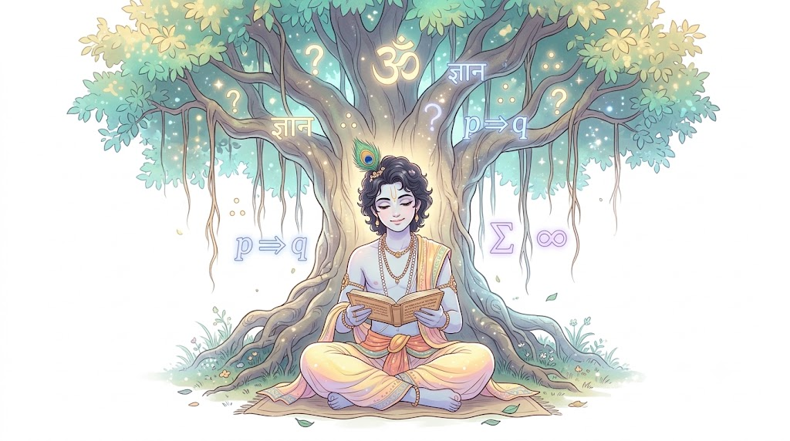

MJC-08: Philosophy of Religion
यूनिट - 1: धर्म दर्शन की प्रकृति, धर्म का स्वरूप एवं अंतर
यूनिट-1 का परिचय (Introduction)
इस यूनिट में हम धर्म दर्शन (Philosophy of Religion) की बुनियादी नींव को समझेंगे। जब हम किसी धर्म को मानते हैं, तो आमतौर पर हम उसकी परंपराओं और मान्यताओं का पालन करते हैं। लेकिन धर्म दर्शन यह सवाल पूछता है कि— क्या ये मान्यताएं तार्किक हैं? ईश्वर का स्वरूप क्या है? धर्म और नैतिकता में क्या रिश्ता है? और भारतीय 'धर्म' तथा पश्चिमी 'रिलीजन' में बुनियादी अंतर क्या है? यह यूनिट आपको धर्म को सिर्फ एक आस्था के रूप में नहीं, बल्कि एक गंभीर दार्शनिक और बौद्धिक नजरिए से देखना सिखाएगी।
1.1.1 धर्म दर्शन की परिभाषा और विषय-क्षेत्र (Definition and Scope of Philosophy of Religion)
1. धर्म दर्शन की परिभाषा (Definition)
सीधे शब्दों में कहें तो धर्म दर्शन (Philosophy of Religion), दर्शनशास्त्र की वह शाखा है जो धर्म और धार्मिक विश्वासों का तार्किक, आलोचनात्मक और दार्शनिक विश्लेषण करती है।
- दर्शन (Philosophy) का मतलब होता है— किसी भी चीज को गहराई से सोचना, तर्कों की कसौटी पर कसना और सच्चाई की तह तक पहुँचना।
- जब हम इसी दर्शन की दृष्टि से धर्म की मुख्य बातों (जैसे ईश्वर, आत्मा, प्रार्थना, पाप-पुण्य, मुक्ति) की जाँच करते हैं, तो वह धर्म दर्शन बन जाता है।
आसान उदाहरण से समझें: एक साधारण धार्मिक व्यक्ति कह सकता है कि "ईश्वर सब कुछ देख रहे हैं क्योंकि हमारे ग्रंथों में ऐसा लिखा है।" लेकिन एक धर्म दर्शन का छात्र यह सवाल पूछेगा कि— यदि ईश्वर सर्वशक्तिमान और दयालु हैं, तो दुनिया में इतना दुख और अन्याय क्यों है? इस तरह के तार्किक और गंभीर मंथन का नाम ही धर्म दर्शन है।


2. धर्म दर्शन का विषय-क्षेत्र (Scope of Philosophy of Religion)
धर्म दर्शन का दायरा बहुत व्यापक (vast) है। इसमें किसी एक विशेष धर्म के कर्मकांडों की चर्चा नहीं होती, बल्कि सभी धर्मों के साझा दार्शनिक मुद्दों पर विचार किया जाता है। इसके मुख्य विषय-क्षेत्र निम्नलिखित हैं:
- ईश्वर का अस्तित्व और उसके गुण (Existence and Attributes of God): ईश्वर कौन हैं? क्या उनके होने को तर्कों या विज्ञान से साबित किया जा सकता है? उनके मुख्य गुण (जैसे सर्वशक्तिमानता, सर्वज्ञता) क्या हैं?
- धार्मिक अनुभव (Religious Experience): लोग जो प्रार्थना, ध्यान या रहस्यवादी (mystic) अनुभवों की बात करते हैं, उनका दार्शनिक मूल्य क्या है? क्या वे अनुभव सच होते हैं?
- बुराई और दुख की समस्या (Problem of Evil): दुनिया में मौजूद प्राकृतिक आपदाएँ, बीमारियाँ और इंसानी क्रूरता (बुराई) का ईश्वर की दयालुता के साथ क्या तालमेल है?
- आत्मा की अमरता और पुनर्जन्म (Immortality of Soul and Rebirth): क्या शरीर के मरने के बाद भी चेतना या आत्मा का अस्तित्व रहता है?
- धर्म और नैतिकता (Religion and Morality): क्या अच्छे इंसान बनने के लिए धर्म का होना जरूरी है, या नैतिकता स्वतंत्र रूप से भी चल सकती है?
- मुक्ति या मोक्ष की अवधारणा (Concept of Liberation): जीवन का अंतिम लक्ष्य क्या है और उससे कैसे पहुँचा जा सकता है?

1.1.2 धर्म दर्शन की प्रकृति: दार्शनिक विश्लेषण (Nature of Philosophy of Religion: Philosophical analysis)
आइए अब समझते हैं कि धर्म दर्शन की प्रकृति (Nature) कैसी है। जब हम किसी वस्तु या विषय की प्रकृति की बात करते हैं, तो इसका मतलब होता है कि वह विषय अंदर से कैसा है, उसका काम करने का तरीका क्या है, और वह अन्य विषयों से कैसे अलग है।
धर्म दर्शन की प्रकृति को पूरी तरह समझने के लिए हमें इसके मुख्य लक्षणों और दार्शनिक दृष्टिकोण को आसान बिंदुओं में देखना होगा:
1. यह आलोचनात्मक और तार्किक है (Critical and Rational Approach)
धर्म दर्शन की सबसे बड़ी विशेषता यह है कि यह किसी भी बात को आँख मूँदकर (blind faith) स्वीकार नहीं करता।
- साधारण धर्म (या अंधविश्वास) कहता है— "जो ग्रंथों में लिखा है, वह अंतिम सत्य है, उस पर सवाल मत उठाओ।"
- इसके विपरीत, धर्म दर्शन कहता है— "हर मान्यता, हर विश्वास और हर परंपरा के पीछे कौन-सा तर्क है? क्या यह बुद्धि की कसौटी पर खरा उतरता है?"
यह धर्म की गहराइयों में जाकर उसके तार्किक आधार की जाँच करता है।

2. यह तटस्थ और निष्पक्ष है (Neutral and Impartial/Unbiased)
धर्म दर्शन किसी एक विशेष धर्म (जैसे हिंदू धर्म, इस्लाम, ईसाई धर्म आदि) की वकालत नहीं करता।
- यह पूरी तरह तटस्थ (neutral) रहकर सभी धर्मों के सामान्य सिद्धांतों का अध्ययन करता है।
- इसका उद्देश्य किसी एक धर्म को सही या दूसरे को गलत साबित करना नहीं है, बल्कि यह देखना है कि दुनिया भर के धर्मों में जो 'ईश्वर', 'आत्मा', 'पाप-पुण्य' या 'मुक्ति' जैसी अवधारणाएँ हैं, उनका दार्शनिक मूल्य क्या है।
3. यह विश्लेषणात्मक है (Analytic Nature)
धर्म दर्शन धार्मिक भाषा और धारणाओं का विश्लेषण (Analysis) करता है। लोग जब धार्मिक बातें करते हैं, तो वे कई ऐसे शब्दों का इस्तेमाल करते हैं जिनका अर्थ बहुत स्पष्ट नहीं होता (जैसे— "ईश्वर सर्वशक्तिमान हैं" या "कर्म का नियम अटूट है")।
- धर्म दर्शन इन वाक्यों और शब्दों के असली अर्थ को खोलता है और देखता है कि तार्किक रूप से इनका क्या मतलब निकलता है।
4. यह विज्ञान और दर्शन के बीच की कड़ी है (Bridge between Science, Human Experience, and Philosophy)
धर्म दर्शन केवल कल्पना में नहीं जीता। यह इंसानी अनुभवों (जैसे प्रार्थना, ध्यान, आंतरिक शांति) को आधार बनाता है और विज्ञान तथा दर्शन के बीच एक सेतु का काम करता है:
- विज्ञान हमें यह बताता है कि चीजें कैसे काम करती हैं (How) (जैसे भौतिक नियम)।
- धर्म दर्शन यह सवाल पूछता है कि इन सबका मूल उद्देश्य या अर्थ क्या है? (Why) (जैसे— क्या इस ब्रह्मांड को बनाने के पीछे कोई उच्च चेतना या उद्देश्य है?)

सारांश (Quick Recap)
संक्षेप में कहें तो, धर्म दर्शन की प्रकृति जिज्ञासु, तार्किक, स्वतंत्र और विश्लेषणात्मक है। यह हमें धर्म के बाहरी दिखावे और कर्मकांडों से आगे ले जाकर उसके आंतरिक और दार्शनिक सत्य को खोजने की प्रेरणा देती है।
1.1.3 धर्म-शास्त्र (Theology) की अवधारणा (Concept of Theology)
धर्म दर्शन को गहराई से समझने के लिए हमें धर्म-शास्त्र (Theology) की अवधारणा को जानना बहुत जरूरी है, क्योंकि दोनों का संबंध धर्म से ही है, लेकिन सोचने का दृष्टिकोण अलग-अलग है।
1. धर्म-शास्त्र (Theology) क्या है?
धर्म-शास्त्र (Theology) दो यूनानी (Greek) शब्दों से मिलकर बना है:
- Theos (थियोस): ईश्वर / भगवान
- Logos (लोगोस): अध्ययन / विचार या शास्त्र
अतः, धर्म-शास्त्र वह विषय है जो किसी विशेष धर्म के भीतर रहकर ईश्वर, उसके स्वरूप, धार्मिक ग्रंथों और ईश्वरीय नियमों का अध्ययन करता है।
इसे आसान शब्दों में 'ईश्वर-शास्त्र' या 'ब्रह्म-विद्या' भी कहा जाता है।
मूल बात: धर्म-शास्त्र हमेशा किसी विशेष धर्म (Specific Religion) की मान्यताओं और परंपराओं को 'सत्य' मानकर आगे बढ़ता है।
2. धर्म-शास्त्र की मुख्य विशेषताएँ (Key Characteristics of Theology)
- आस्था और श्रद्धा पर आधारित (Based on Faith and Revelation):
धर्म-शास्त्र की शुरुआत ईश्वर पर पूर्ण विश्वास (Faith) और धार्मिक ग्रंथों (जैसे— वेद, गीता, कुरआन, बाइबिल) के 'ईश्वरीय प्रकटन' (Revelation) से होती है। धर्म-शास्त्री यह मानकर चलते हैं कि ग्रंथ में लिखी बात सत्य है।
- समर्पित दृष्टिकोण (Internal/Devotional Viewpoint):
धर्म-शास्त्र का अध्ययन करने वाला व्यक्ति (Theologian/धर्म-शास्त्री) आमतौर पर उसी धर्म का अनुयायी या भक्त होता है। उसका लक्ष्य अपने धर्म के सिद्धांतों की व्याख्या करना और उन्हें सही सिद्ध करना होता है।
- धर्म का बचाव एवं प्रचार (Defense of Faith):
धर्म-शास्त्र का एक बड़ा उद्देश्य अपने धर्म के सिद्धांतों को तर्कों के माध्यम से अन्य आलोचनाओं से बचाना (Apologetics) और अपने संप्रदाय के अनुयायियों की आस्था को मजबूत करना होता है।
- कर्मकांड और नियमों का निर्धारण (Normative and Practical):
यह केवल दार्शनिक विचार नहीं करता, बल्कि यह भी तय करता है कि पूजा-पाठ कैसे हो, पाप क्या है, पुण्य क्या है और व्यक्ति को धर्म के अनुसार कैसे जीना चाहिए।

आसान उदाहरण से समझें (Real-Life Analogy)
मान लीजिए कि बाइबिल या गीता एक कानून की किताब (Law Book) है:
- धर्म-शास्त्री (Theologian) उस वकील या जज की तरह है जो उस कानून (ग्रंथ) की सीमाओं के भीतर रहकर ही फैसला सुनाता है। वह यह सवाल नहीं उठाता कि "कानून सही है या गलत?", बल्कि वह यह देखता है कि "कानून के अनुसार सही व्याख्या क्या है?"
- (जबकि धर्म दार्शनिक यह पूछेगा कि "क्या यह पूरा कानून ही न्यायसंगत और तार्किक है?")
1.1.4 धर्म दर्शन और धर्म-शास्त्र के बीच संबंध एवं अंतर (Relationship and Difference between Philosophy of Religion and Theology)
धर्म दर्शन (Philosophy of Religion) और धर्म-शास्त्र (Theology) दोनों का संबंध धर्म से है, लेकिन दोनों के काम करने का तरीका और नजरिया बिल्कुल अलग है। परीक्षा में यह प्रश्न बार-बार पूछा जाता है, इसलिए इसे आसान और स्पष्ट तरीके से समझते हैं।
1. धर्म दर्शन और धर्म-शास्त्र के बीच संबंध (Relationship)
अलग-अलग दृष्टिकोण होने के बावजूद, ये दोनों विषय एक-दूसरे के पूरक (complementary) हैं और आपस में गहराई से जुड़े हुए हैं:
- विचार के लिए सामग्री मिलना (Source of Ideas): धर्म-शास्त्र धार्मिक ग्रंथों, ईश्वर संबंधी मान्यताओं और आस्था के अनुभवों को सामने रखता है। धर्म दर्शन इन्हीं धार्मिक विचारों को अपनी चर्चा का आधार बनाता है।
- तार्किक स्पष्टता देना (Logical Clarity): धर्म-शास्त्र जब अपनी मान्यताओं को दुनिया के सामने तार्किक रूप से रखना चाहता है, तो उसे धर्म दर्शन की तार्किक विधियों (Logical tools) की ही मदद लेनी पड़ती है।
- सत्य की खोज का साझा उद्देश्य: भले ही धर्म-शास्त्र आस्था का रास्ता चुनता है और धर्म दर्शन तर्क का, लेकिन दोनों का अंतिम लक्ष्य परम सत्य (Ultimate Truth) और जीवन के अर्थ को समझना ही है।
2. धर्म दर्शन और धर्म-शास्त्र के बीच मुख्य अंतर (Differences)
इन दोनों के बीच का अंतर मुख्य रूप से उनके दृष्टिकोण, शुरुआती बिंदु और सोचने के तरीके पर आधारित है:
| अंतर का आधार | धर्म-शास्त्र (Theology) | धर्म दर्शन (Philosophy of Religion) |
|---|---|---|
| 1. शुरुआती बिंदु (Starting Point) | इसकी शुरुआत श्रद्धा, आस्था और धार्मिक ग्रंथों (Faith & Revelation) से होती है। | इसकी शुरुआत जिज्ञासा, तर्क और दार्शनिक प्रश्न (Reason & Critical Inquiry) से होती है। |
| 2. दृष्टिकोण (Approach) | यह किसी विशेष धर्म (जैसे हिंदू, ईसाई, या इस्लाम) के दायरे में रहकर काम करता है। | यह तटस्थ (Neutral) होता है और सभी धर्मों का सामान्य विश्लेषण करता है। |
| 3. मुख्य उद्देश्य (Goal) | अपने धर्म की मान्यताओं को सही सिद्ध करना और उनका बचाव करना। | धार्मिक मान्यताओं और तर्कों का निष्पक्ष परीक्षण करना। |
| 4. अध्ययन की पद्धति (Method) | यह आज्ञाकारी (Dogmatic) होता है; ग्रंथों में लिखी बातों को सत्य मानकर आगे बढ़ता है। | यह विश्लेषणात्मक (Analytic) होता है; बिना तार्किक आधार के किसी बात को नहीं मानता। |
| 5. दायरा (Scope) | संकीर्ण (Narrow) - यह केवल एक विशिष्ट धार्मिक संप्रदाय तक सीमित रहता है। | व्यापक (Broad) - यह पूरी मानव जाति के धार्मिक विचारों का अध्ययन करता है। |

आसान उदाहरण से समझें (Real-Life Example)
- धर्म-शास्त्र (Theologian): "हम ईश्वर की पूजा इसलिए करते हैं क्योंकि हमारे ग्रंथों में ऐसा करने का आदेश दिया गया है और यही मोक्ष का मार्ग है।" (यहाँ आस्था मुख्य है)
- धर्म दार्शनिक (Philosopher of Religion): "ग्रंथों में ऐसा लिखा है, यह सही है; लेकिन क्या हम तर्क से यह सिद्ध कर सकते हैं कि ईश्वर सच में अस्तित्व में है?" (यहाँ तर्क मुख्य है)
यूनिट 1.1 का संक्षिप्त सारांश (Quick Revision Point)
- धर्म दर्शन: तर्क और बुद्धि के आधार पर धर्म का निष्पक्ष विश्लेषण है।
- धर्म-शास्त्र: आस्था और ग्रंथों के आधार पर किसी विशिष्ट धर्म का अध्ययन है।
1.2.1 धर्म के आवश्यक तत्व एवं स्वरूप (Essential Elements and Nature of Religion)
यूनिट 1.1 में हमने समझा कि 'धर्म दर्शन' और 'धर्म-शास्त्र' में क्या अंतर है। अब हम खुद 'धर्म' (Religion) के गहराई में जाकर यह समझेंगे कि आखिर धर्म का असली स्वरूप क्या है और दुनिया के किसी भी धर्म को बनाने वाले मूल आवश्यक तत्व (Essential Elements) कौन-कौन से हैं।
1. धर्म का अर्थ और स्वरूप (Nature of Religion)
'धर्म' शब्द की उत्पत्ति संस्कृत की 'धृ' धातु से हुई है, जिसका अर्थ है— 'धारण करना' (जो धारण करने योग्य हो, जो समाज और व्यक्ति को जोड़े रखे)।
अगर हम पश्चिमी दृष्टिकोण (Religion) से देखें, तो यह लैटिन शब्द 'Religare' से बना है, जिसका अर्थ होता है— 'बाँधना' या 'पुनः जोड़ना' (मनुष्य को ईश्वर या परम सत्य से जोड़ना)।
अतः धर्म का स्वरूप केवल कुछ बाहरी पूजा-पाठ या नियमों तक सीमित नहीं है, बल्कि यह मनुष्य की उस आंतरिक चेतना और विश्वास का नाम है जो उसे किसी सर्वोच्च सत्ता (God/Absolute Truth) या नैतिक नियमों से जोड़ता है।
2. धर्म के 5 मुख्य/आवश्यक तत्व (5 Essential Elements of Religion)
दार्शनिकों के अनुसार, दुनिया का कोई भी धर्म हो (चाहे वह ईश्वर को मानता हो या न मानता हो), उसमें मुख्य रूप से 5 आवश्यक तत्व पाए जाते हैं:
- संज्ञानात्मक या वैचारिक तत्व (Cognitive/Intellectual Element - विश्वास):
- हर धर्म के पीछे कुछ बुनियादी विचार या मान्यताएँ होती हैं। जैसे— ईश्वर का अस्तित्व, आत्मा, कर्म का सिद्धांत, या पुनर्जन्म। व्यक्ति इन विचारों को सत्य मानकर स्वीकार करता है।
- भावात्मक तत्व (Emotional/Affective Element - भावनाएँ):
- धर्म केवल दिमाग की सोच नहीं है, इसमें दिल की भावनाएँ शामिल होती हैं। ईश्वर या परम सत्ता के प्रति भक्ति, प्रेम, श्रद्धा, भय (Reverence/Awe), और समर्पण की भावना धर्म का मुख्य हिस्सा है।
- क्रियात्मक या आचरणात्मक तत्व (Practical/Conative Element - आचरण व कर्मकांड):
- जब मनुष्य के मन में विश्वास और भावना होती है, तो वह उसे अपने कर्मों में प्रकट करता है। इसमें प्रार्थना, ध्यान, पूजा-पाठ, व्रत, दान, और दैनिक जीवन के नैतिक नियम आते हैं।
- सामाजिक तत्व (Social Element - समुदाय):
- धर्म कभी भी अकेला नहीं रहता; यह लोगों को आपस में जोड़ता है। एक समान धार्मिक विश्वास वाले लोग मिलकर एक समुदाय (Community) बनाते हैं (जैसे— मंदिर, मस्जिद, चर्च या गुरुद्वारे में एक साथ प्रार्थना करना)।
- अनुभूत्यात्मक तत्व (Experiential Element - आध्यात्मिक अनुभव):
- यह धर्म का सबसे गहरा तत्व है। जब कोई व्यक्ति ध्यान या भक्ति में डूबता है, तो उसे एक आंतरिक शांति या अलौकिक अनुभव (Mystic/Spiritual Experience) होता है, जिसे शब्दों में बयां करना मुश्किल होता है।

आसान उदाहरण से समझें (Real-Life Example)
इसे आप एक पेड़ के उदाहरण से आसानी से याद रख सकते हैं:
- जड़ (Root) = वैचारिक तत्व: ईश्वर या परम सत्य में विश्वास।
- तना (Trunk) = भावात्मक तत्व: मन में भक्ति और प्रेम की भावना।
- शाखाएँ और पत्तियाँ (Branches) = आचरणात्मक तत्व: पूजा, प्रार्थना और नैतिक आचरण।
- फूल और फल (Fruits) = आध्यात्मिक अनुभव: आंतरिक शांति और आनंद (मोक्ष/मुक्ति)।
1.2.2 धर्म और नैतिकता के बीच संबंध (Relationship between Religion and Morality)
धर्म और नैतिकता का संबंध दर्शनशास्त्र का एक अत्यंत महत्वपूर्ण और गहरा विषय है। सामान्य जीवन में हम देखते हैं कि एक धार्मिक व्यक्ति से यह उम्मीद की जाती है कि वह नैतिक (सच्चा, दयालु, ईमानदार) होगा। लेकिन दार्शनिक दृष्टि से सवाल यह उठता है कि— क्या धर्म और नैतिकता एक ही हैं, या ये दोनों अलग-अलग अवधारणाएँ हैं जो आपस में जुड़ी हुई हैं?
1. नैतिकता (Morality) क्या है?
नैतिकता का अर्थ है— सही और गलत (Good and Bad / Right and Wrong) के बीच का अंतर समझना और उचित आचरण करना।
- जैसे: सत्य बोलना, अहिंसा, चोरी न करना, दूसरों की सहायता करना और समाज में न्याय बनाए रखना।
2. धर्म और नैतिकता के बीच संबंध (Core Relationship)
दर्शनशास्त्र में धर्म और नैतिकता के संबंध को मुख्य रूप से तीन दृष्टिकोणों से समझा जाता है:
- धर्म और नैतिकता एक-दूसरे के पूरक हैं (Complementary Relationship):
- धर्म नैतिकता को 'बल' (Motivation) देता है: केवल यह जानना काफी नहीं है कि "सत्य बोलना चाहिए"; मनुष्य को सत्य पर चलने के लिए आंतरिक प्रेरणा और साहस की आवश्यकता होती है। धर्म (ईश्वर का भय, भक्ति या कर्म का सिद्धांत) मनुष्य को नैतिक मार्ग पर चलने की शक्ति देता है।
- नैतिकता धर्म का 'आत्मा/प्राण' है: बिना नैतिकता के धर्म केवल ढोंग या अंधविश्वास बन जाता है। यदि कोई व्यक्ति रोज़ मंदिर जाता है लेकिन दूसरों को धोखा देता है, तो दार्शनिक दृष्टि से उसे सच्चा धार्मिक नहीं माना जा सकता।
- दोनों का अंतिम लक्ष्य एक ही है (Common Goal):
- धर्म का लक्ष्य मनुष्य का उत्थान और मुक्ति (Self-realization / Moksha) है।
- नैतिकता का लक्ष्य भी मनुष्य को अहंकार और स्वार्थ से ऊपर उठाकर पूरे समाज के कल्याण की ओर ले जाना है।
- भारतीय दृष्टिकोण: धर्म ही नैतिकता है (Dharmic Perspective):
- भारतीय दर्शन में 'धर्म' का अर्थ ही 'नैतिक कर्तव्य' (Moral Duty) है। यहाँ 'सद्गुण' (Virtues) को ही धर्म माना गया है। श्रीमद्भगवद्गीता में श्री कृष्ण अर्जुन को जो उपदेश देते हैं, वह वास्तव में अपने नैतिक कर्तव्य (स्वधर्म) का पालन करने की ही सीख है।

3. धर्म और नैतिकता में अंतर (Key Differences)
भले ही दोनों आपस में जुड़े हैं, पर दार्शनिक रूप से इनमें कुछ सूक्ष्म अंतर भी हैं:
| आधार | धर्म (Religion) | नैतिकता (Morality) |
|---|---|---|
| 1. केंद्र बिंदु (Focus) | इसका संबंध मुख्य रूप से ईश्वर, आत्मा, और अलौकिक सत्ता से है। | इसका संबंध मुख्य रूप से मानव आचरण और समाज से है। |
| 2. आधार (Foundation) | यह आस्था, श्रद्धा और आध्यात्मिक अनुभवों पर आधारित होता है। | यह बुद्धि, विवेक और सामाजिक नियमों पर आधारित होती है। |
| 3. दायरा (Scope) | इसमें पूजा-पाठ, ध्यान, और कर्मकांड भी शामिल हैं। | इसमें केवल 'उचित और अनुचित कर्म' (Right & Wrong Conduct) शामिल हैं। |
आसान उदाहरण से समझें (Real-Life Example)
- नैतिकता (Morality): "किसी गरीब की मदद करना सही काम है।" (यह बुद्धि और मानवीय संवेदना कहती है)
- धर्म (Religion): "गरीब की मदद करना ईश्वर की सेवा के समान है, इससे आत्मा शुद्ध होती है।" (यह नैतिकता को एक आध्यात्मिक और पवित्र रूप दे देता है)
1.2.3 क्या नैतिकता धर्म पर निर्भर है? (Is Morality Dependent on Religion?)
पिछली बार हमने धर्म और नैतिकता के सामान्य संबंधों को समझा। अब दर्शनशास्त्र का एक सबसे ज्वलंत और महत्वपूर्ण सवाल आता है: क्या इंसान का नैतिक (अच्छा, सच्चा और ईमानदार) होने के लिए धार्मिक होना या ईश्वर में विश्वास करना बिल्कुल अनिवार्य है?
इस प्रश्न पर दार्शनिकों के बीच दो मुख्य दृष्टिकोण (Views) हैं:
1. पहला दृष्टिकोण: नैतिकता धर्म पर निर्भर है (Heteronomous Ethics)
इस विचार के समर्थकों का मानना है कि बिना धर्म के नैतिकता टिक ही नहीं सकती।
- ईश्वरीय आदेश का सिद्धांत (Divine Command Theory): इसके अनुसार जो कुछ भी 'नैतिक या सही' है, वह इसलिए सही है क्योंकि ईश्वर ने उसका आदेश दिया है। जैसे— सत्य बोलना सही है क्योंकि यह ईश्वर की आज्ञा है।
- नैतिकता का संबल (Moral Motivation): अगर धर्म या ईश्वर न हो, तो व्यक्ति को नैतिक बने रहने की प्रेरणा कहाँ से मिलेगी? धर्म व्यक्ति में ईश्वर के न्याय, कर्म के सिद्धांत या पाप-पुण्य का डर और भाव जगाता है, जो उसे गलत रास्ते पर जाने से रोकता है।
- महान दार्शनिक कांत (Immanuel Kant) का विचार: कांत ने कहा कि भले ही हम तर्क से ईश्वर को सिद्ध न कर सकें, लेकिन नैतिकता को बनाए रखने के लिए ईश्वर और आत्मा की अमरता को मानना व्यावहारिक रूप से आवश्यक (Practical Postulate) है, ताकि अच्छे कर्मों का फल मिल सके।
2. दूसरा दृष्टिकोण: नैतिकता धर्म से स्वतंत्र है (Autonomous Ethics)
इसके विपरीत कई आधुनिक और दार्शनिक विचारक मानते हैं कि नैतिकता पूरी तरह से स्वतंत्र है।
- मानवीय विवेक और बुद्धि (Human Reason): मनुष्य एक बुद्धिमान प्राणी है। वह अपनी बुद्धि और संवेदना से यह आसानी से समझ सकता है कि चोरी करना या दूसरों को नुकसान पहुँचाना गलत है, इसके लिए किसी धार्मिक ग्रंथ के आदेश की जरूरत नहीं है।
- नास्तिकों की नैतिकता (Morality of Non-Believers): दुनिया में लाखों ऐसे लोग हैं जो किसी ईश्वर या धर्म को नहीं मानते (जैसे— नास्तिक या बौद्ध/जैन अनुयायी), फिर भी वे अत्यधिक सत्यवादी, दयालु और नैतिक जीवन जीते हैं।
- सुकरात की प्रसिद्ध पहेली (Euthyphro Dilemma): महान दार्शनिक सुकरात ने एक प्रसिद्ध सवाल पूछा था:
- क्या कोई कर्म इसलिए सही है क्योंकि ईश्वर उसे पसंद करते हैं? (अगर ऐसा है, तो ईश्वर अगर कल चोरी करने को कहें, तो क्या चोरी नैतिक हो जाएगी?)
- या ईश्वर उसे इसलिए पसंद करते हैं क्योंकि वह कर्म पहले से ही सही और नैतिक है? (इसका मतलब नैतिकता ईश्वर/धर्म से भी ऊपर और स्वतंत्र है!)
निष्कर्ष (Conclusion)
दार्शनिक निष्कर्ष यह निकलता है कि धर्म नैतिकता को संबल, आधार और पवित्रता ज़रूर प्रदान करता है, लेकिन नैतिकता पूरी तरह से धर्म की गुलाम नहीं है। एक व्यक्ति बिना धार्मिक बने भी पूरी तरह से नैतिक हो सकता है।
1.2.4 ईश्वर के बिना धर्म की अवधारणा: बौद्ध एवं जैन धर्म का संदर्भ (Concept of Religion without God: Reference to Buddhism and Jainism)
पश्चिमी दर्शन में अक्सर यह मान लिया जाता है कि "बिना ईश्वर के कोई धर्म हो ही नहीं सकता।" लेकिन भारतीय दर्शन ने इस सोच को पूरी तरह बदलकर दुनिया के सामने 'ईश्वर-विहीन धर्म' (Religion without God / Non-Theistic Religion) का अद्भुत उदाहरण प्रस्तुत किया।
बौद्ध और जैन धर्म इस बात के सबसे प्रत्यक्ष प्रमाण हैं कि कोई धर्म बिना किसी सृष्टिकर्ता ईश्वर (Creator God) को माने भी पूर्ण, प्रामाणिक और अत्यंत प्रभावशाली हो सकता है।
1. बौद्ध धर्म का संदर्भ (Buddhism Context)
बौद्ध धर्म में ईश्वर को सृष्टि का रचयिता या संचालन करने वाला नहीं माना गया है।
- अनात्मवाद और अनीश्वरवाद: महात्मा बुद्ध ने ईश्वर या किसी अजर-अमर आत्मा पर चर्चा करने के बजाय सीधे जीवन के 'दुख' और उसके 'समाधान' पर ध्यान दिया।
- प्रतीत्यसमुत्पाद (Law of Cause and Effect): बुद्ध ने समझाया कि यह दुनिया किसी ईश्वर की इच्छा से नहीं चलती, बल्कि यह 'कारण-कार्य के नियम' (Cause and Effect) से चलती है। हर घटना के पीछे कोई न कोई कारण होता है।
- बिना ईश्वर के धर्म का आधार: बौद्ध धर्म का पूरा ढांचा चार आर्य सत्य (Four Noble Truths) और अष्टांगिक मार्ग (Eightfold Path) पर टिका है। यहाँ ईश्वर की भक्ति के बजाय 'सम्यक आचरण', 'ध्यान' और 'करुणा' ही धर्म का मूल रूप है।

2. जैन धर्म का संदर्भ (Jainism Context)
जैन दर्शन भी ईश्वर को इस ब्रह्मांड का रचयिता (Creator) या विनाशक (Destroyer) नहीं मानता।
- शाश्वत ब्रह्मांड (Eternal Universe): जैन दर्शन के अनुसार यह जगत अनादि और अनंत है—यह न तो किसी ईश्वर ने बनाया है और न ही कोई ईश्वर इसे चला रहा है।
- कर्म का सर्वोच्च नियम: जैन धर्म में 'कर्म' ही सर्वोपरि है। आप जैसा कर्म करेंगे, वैसा ही फल पाएंगे। ईश्वर भी किसी के पाप-पुण्य को माफ नहीं कर सकता।
- आत्मा ही परमात्मा है: जैन धर्म में भले ही कोई 'सृष्टिकर्ता ईश्वर' न हो, पर वे हर मुक्त आत्मा (जीव) में ईश्वरत्व मानते हैं। तीर्थंकर (जैसे भगवान महावीर) कोई ईश्वर नहीं थे, बल्कि वे इंसान ही थे जिन्होंने अपने कर्मों और साधना से मोक्ष प्राप्त किया।
- धर्म का आधार: यहाँ धर्म का आधार ईश्वर की पूजा नहीं, बल्कि अहिंसा, सत्य, अपरिग्रह, और 'त्रि-रत्न' (सम्यक दर्शन, सम्यक ज्ञान, सम्यक चरित्र) का पालन करना है।
3. 'ईश्वर के बिना धर्म' का मुख्य दार्शनिक सार (Summary Points)
- धर्म के लिए क्या जरूरी है? धर्म के लिए ईश्वर से ज्यादा 'नैतिकता', 'आत्म-शुद्धि', 'कर्म का नियम' और 'मुक्ति का लक्ष्य' अनिवार्य तत्व हैं।
- व्यक्ति स्वयं उत्तरदायी है: इन धर्मों में मनुष्य को अपनी मुक्ति के लिए किसी ईश्वरीय कृपा (Grace) पर निर्भर नहीं रहना पड़ता; वह अपने कर्मों का खुद मालिक है ("अप्प दीपो भव" - अपना दीपक स्वयं बनो)।
- पाश्चात्य अवधारणा का खंडन: बौद्ध और जैन धर्म इस बात को सिद्ध करते हैं कि 'रिलीजन' की परिभाषा केवल 'ईश्वर की पूजा' तक सीमित नहीं की जा सकती।
1.3 धर्म और रिलीजन में अंतर (Distinguish between 'Dharma' and 'Religion')
सामान्य भाषा में हम अक्सर अंग्रेजी शब्द 'Religion' का हिंदी अनुवाद 'धर्म' कर देते हैं। लेकिन दर्शनशास्त्र की दृष्टि से यह अनुवाद न केवल अधूरा है, बल्कि काफी भ्रामक भी है।
भारतीय परंपरा का 'धर्म' और पश्चिमी/पाश्चात्य परंपरा का 'रिलीजन' दो अलग-अलग जीवन-दृष्टिकोणों और सांस्कृतिक आधारों से निकले हैं। परीक्षा के लिहाज से यह टॉपिक बेहद महत्वपूर्ण है, इसलिए आइए इसे विस्तार से और गहराई से समझते हैं।
1.3.1 'धर्म' (Dharma) की भारतीय अवधारणा (Indian Concept of 'Dharma')
भारतीय दर्शन में 'धर्म' कोई पूजा-पद्धति, मत या संप्रदाय नहीं है, बल्कि यह जीवन का एक व्यापक और सार्वभौमिक नियम है।
1. व्युत्पत्ति और मूल अर्थ (Etymological Meaning)
'धर्म' शब्द संस्कृत की 'धृ' धातु से बना है, जिसका शाब्दिक अर्थ होता है— 'धारण करना' (जो धारण किया जाए, जो पूरे समाज, ब्रह्मांड और व्यक्ति को बिखरने से बचाए और संभलकर रखे)।
"धारणाद् धर्ममित्याहुः धर्मो धारयते प्रजाः।"
अर्थात् जो सभी प्रजा और सृष्टि को धारण करता है और उनका उत्थान करता है, वही धर्म है।
2. स्वभाव और कर्तव्य का नियम (Law of Nature & Duty)
भारतीय परंपरा में हर वस्तु, जीव और पद का अपना एक प्राकृतिक स्वभाव (Nature) और कर्तव्य (Duty) होता है, वही उसका धर्म है:
- उदाहरण: आग का धर्म है— गर्मी और रोशनी देना। पानी का धर्म है— शीतलता और प्यास बुझाना।
- ठीक इसी तरह, एक मनुष्य के रूप में सत्य बोलना, करुणा रखना, अपने माता-पिता, समाज और राष्ट्र के प्रति कर्तव्यों का पालन करना मनुष्य का 'मानव धर्म' है।
3. धर्म के विभिन्न आयाम (Dimensions of Dharma)
भारतीय ऋषियों ने जीवन के अलग-अलग चरणों और स्थितियों के अनुसार धर्म को वर्गीकृत किया है:
- सनातनी/सामान्य धर्म: वे नैतिक मूल्य जो सभी इंसानों के लिए हमेशा एक समान रहते हैं— जैसे सत्य, अहिंसा, दया, क्षमा, और पवित्रता।
- स्वधर्म: किसी व्यक्ति का अपनी आयु, योग्यता और स्थिति के अनुसार विशेष कर्तव्य (जैसे— एक छात्र का धर्म पढ़ना है, एक सैनिक का धर्म देश की रक्षा करना है)।
- वर्णधर्म और आश्रमधर्म: समाज में कार्य-विभाजन और जीवन की अवस्थाओं (ब्रह्मचर्य, गृहस्थ, वानप्रस्थ, संन्यास) के अनुसार तय किए गए कर्तव्य।
4. पुरुषार्थ चतुष्टय का पहला अंग
भारतीय जीवन-दर्शन में चार मुख्य पुरुषार्थ माने गए हैं— धर्म, अर्थ, काम, और मोक्ष। यहाँ धर्म सबसे पहला और आधारभूत अंग है, जो बताता है कि धन (अर्थ) और इच्छाओं (काम) की पूर्ति हमेशा धर्म यानी न्यायपूर्ण मर्यादाओं के भीतर रहकर ही होनी चाहिए।
1.3.2 'रिलीजन' (Religion) की पश्चिमी अवधारणा (Western Concept of 'Religion')
पश्चिमी या पाश्चात्य दर्शन में 'रिलीजन' की अवधारणा मुख्य रूप से अब्राहमिक धर्मों (ईसाई धर्म, इस्लाम, यहूदी धर्म) के ऐतिहासिक और दार्शनिक विकास से प्रभावित रही है।
1. व्युत्पत्ति और मूल अर्थ (Etymological Meaning)
'Religion' शब्द लैटिन भाषा के 'Religare' शब्द से निकला है, जिसका अर्थ होता है— 'बाँधना' या 'पुनः जोड़ना' (Re-bind)।
- इसका तात्पर्य है: मनुष्य का ईश्वर (Creator/God) के साथ कट चुका रिश्ता प्रार्थना, आज्ञाकारिता और विश्वास के माध्यम से पुनः स्थापित करना या बाँधना।
2. 'रिलीजन' के तीन अनिवार्य स्तंभ (Three Pillars of Religion)
पश्चिमी अवधारणा के अनुसार, किसी भी विचार को 'रिलीजन' कहलाने के लिए मुख्य रूप से तीन चीजें अनिवार्य मानी जाती हैं:
- एक ईश्वर/सृष्टिकर्ता (One God/Prophet): एक सर्वोच्च सत्ता या मसीहा/पैगंबर पर विश्वास।
- एक पवित्र ग्रंथ (One Sacred Book): एक विशिष्ट धर्मग्रंथ, जिसमें ईश्वर के आदेश लिखे हों (जैसे— बाइबिल, कुरआन आदि)।
- एक निश्चित पूजा-पद्धति व संस्था (One Organized Church/Creed): प्रार्थना की एक निश्चित विधि, पूजा स्थल और धार्मिक संस्था का ढांचा।
3. आस्था और आदेश पर आधारित (Faith and Commandments)
'रिलीजन' में ईश्वर द्वारा दिए गए आदेशों (Commandments) को मानना सर्वोच्च कर्तव्य होता है। जो व्यक्ति उन आदेशों और ग्रंथों पर विश्वास रखता है, वह उस रिलीजन का हिस्सा माना जाता है; और जो विश्वास नहीं करता, उसे 'अविश्वासी' या 'बिलीवर न होना' (Non-believer/Heretic) कहा जाता है।

1.3.3 धर्म और रिलीजन के बीच मुख्य दार्शनिक अंतर (Key Philosophical Differences)
दोनों अवधारणाओं के गहन विश्लेषण के बाद, हम इनके बीच के अंतरों को निम्नलिखित बिंदुओं और तुलनात्मक तालिका (Comparison Table) के माध्यम से स्पष्ट रूप से समझ सकते हैं:
1. व्यापकता (Scope and Inclusivity)
- धर्म: अत्यंत व्यापक और समावेशी (Inclusive) है। यह केवल मनुष्यों पर ही नहीं, बल्कि पूरी प्रकृति, पशु-पक्षियों और ब्रह्मांडीय व्यवस्था पर लागू होता है। इसमें ईश्वर को न मानने वाले (जैसे नास्तिक, बौद्ध, जैन) भी धार्मिक हो सकते हैं, यदि वे सत्य और नैतिक कर्तव्यों का पालन करते हैं।
- रिलीजन: तुलनात्मक रूप से विशिष्ट और सीमित (Exclusive) होता है। यह एक विशेष आस्था, पैगंबर या ग्रंथ को मानने वाले समूह तक ही सीमित रहता है।
2. परिवर्तनशीलता और गतिशीलता (Dynamic vs Rigid)
- धर्म: समय, परिस्थिति और व्यक्ति के विवेक के अनुसार बदल सकता है ("देश-काल-पात्र" के अनुसार कर्तव्य तय होते हैं)। यह गतिशील (Dynamic) है।
- रिलीजन: ग्रंथों और स्थापित ईश्वरीय आदेशों पर आधारित होने के कारण इसका ढांचा निश्चित और स्थिर (Rigid) होता है।
3. आस्था बनाम आचरण (Faith vs Conduct)
- धर्म: आचरण, कर्तव्य और विवेक (Conduct & Right Action) पर जोर देता है।
- रिलीजन: मुख्य रूप से आस्था, विश्वास और विशिष्ट पंथीय निष्ठा (Faith & Belief) पर जोर देता है।
धर्म और रिलीजन की मुख्य तुलनात्मक तालिका (Comparison Table)
| अंतर का आधार (Criteria) | भारतीय अवधारणा: 'धर्म' (Dharma) | पश्चिमी अवधारणा: 'रिलीजन' (Religion) |
|---|---|---|
| 1. शाब्दिक अर्थ | 'धृ' धातु से — धारण करना, संभालना या स्वभाव। | 'Religare' से — मनुष्य को ईश्वर से बाँधना। |
| 2. मूल आधार | कर्तव्य, नैतिकता, न्याय और प्राकृतिक स्वभाव। | ईश्वरीय आदेश, आस्था और विशिष्ट ग्रंथ पर विश्वास। |
| 3. ईश्वर की अनिवार्य आवश्यकता | अनिवार्य नहीं (बौद्ध व जैन दर्शन बिना ईश्वर के भी धर्म हैं)। | ईश्वर/सृष्टिकर्ता और पैगंबर की उपस्थिति अनिवार्य मानी जाती है। |
| 4. दृष्टिकोण | सार्वभौमिक (Universal) एवं समावेशी। | संप्रदाय-विशेष (Sectarian) एवं मत-आधारित। |
| 5. मुख्य जोर (Focus) | कर्म और आचरण (आप समाज और प्रकृति के साथ कैसा व्यवहार करते हैं)। | विश्वास और आस्था (आप किस ग्रंथ या मसीहा में यकीन रखते हैं)। |
| 6. रूपांतरण (Conversion) | धर्म बदला नहीं जा सकता, क्योंकि कर्तव्य और स्वभाव बदले नहीं जाते। | एक रिलीजन से दूसरे रिलीजन में धर्मांतरण (Conversion) संभव है। |
निष्कर्ष (Conclusion)
संक्षेप में कहें तो, हर 'रिलीजन' में धर्म (नैतिकता और कर्तव्य) के तत्व हो सकते हैं, लेकिन हर 'धर्म' को किसी एक 'रिलीजन' के संकीर्ण दायरे में नहीं बाँधा जा सकता।
'रिलीजन' यह बताता है कि पूजा कैसे करनी है और किस ईश्वर को मानना है, जबकि 'धर्म' यह बताता है कि एक मनुष्य के रूप में सही जीवन कैसे जीना है और समाज व प्रकृति के प्रति अपने कर्तव्यों को कैसे निभाना है।
यूनिट - 2: धार्मिक चेतना एवं धार्मिक विश्वास के आधार (Religious Consciousness & Foundations of Religious Belief)
यूनिट-2 का परिचय (Introduction)
यूनिट-1 में हमने धर्म दर्शन की प्रकृति, धर्म-शास्त्र से उसके अंतर और 'धर्म' बनाम 'रिलीजन' के दार्शनिक पहलुओं को विस्तार से समझा। अब हम यूनिट-2 में प्रवेश कर रहे हैं, जिसका मुख्य केंद्र-बिंदु है— धार्मिक चेतना (Religious Consciousness) और धार्मिक विश्वास के आधार (Foundations of Religious Belief)।
जब कोई इंसान किसी अलौकिक शक्ति, ईश्वर या ब्रह्मांडीय सत्य को महसूस करता है, तो उसके भीतर एक विशेष मानसिक और आध्यात्मिक जागृति पैदा होती है। इसे ही 'धार्मिक चेतना' कहते हैं। इस यूनिट में हम यह समझने की कोशिश करेंगे कि मनुष्य के भीतर यह चेतना कैसे जागती है, इसके मनोवैज्ञानिक और दार्शनिक पहलू क्या हैं, और हमारे धार्मिक विश्वास किन मजबूत या कमजोर तर्कों (जैसे तर्क, श्रद्धा, प्रकटन और रहस्यवादी अनुभव) पर टिके होते हैं।
2.1 धार्मिक चेतना (Religious Consciousness)
2.1.1 धार्मिक चेतना का अर्थ और विशेषताएं (Meaning and Characteristics of Religious Consciousness)
1. धार्मिक चेतना का अर्थ (Meaning of Religious Consciousness)
सामान्य शब्दों में, धार्मिक चेतना (Religious Consciousness) मनुष्य की वह आंतरिक मानसिक और आध्यात्मिक स्थिति है, जिसके माध्यम से वह अपने आस-पास की भौतिक दुनिया से ऊपर उठकर किसी सर्वोच्च सत्ता, परम सत्य, या दिव्यता (Divinity) का अनुभव करता है।
यह केवल किसी मंदिर में जाकर घंटी बजाना या पूजा करना नहीं है, बल्कि यह मनुष्य के भीतर की वह जागृत अनुभूति (Awakened Awareness) है जो उसे यह अहसास कराती है कि इस ब्रह्मांड में कोई ऐसी उच्च शक्ति या नैतिक नियम है जो सब कुछ संचालित कर रहा है।
दार्शनिक दृष्टिकोण: महान दार्शनिक विलियम जेम्स (William James) ने अपनी प्रसिद्ध पुस्तक "द वैरायटीज ऑफ रिलीजियस एक्सपीरियंस" में स्पष्ट किया है कि धार्मिक चेतना इंसान के भीतर की वह गहरी भावना है जो उसे ब्रह्मांड से जोड़े रखती है।

2. धार्मिक चेतना की मुख्य विशेषताएँ (Characteristics of Religious Consciousness)
धार्मिक चेतना के स्वरूप को पूरी तरह समझने के लिए इसकी निम्नलिखित प्रमुख विशेषताओं को जानना आवश्यक है:
- आंतरिक और व्यक्तिगत अनुभव (Inner and Personal Experience):
- धार्मिक चेतना पूरी तरह से बाहरी दिखावे या कर्मकांडों पर निर्भर नहीं होती। यह मनुष्य के अंतःकरण (Inner Consciousness) का एक गहरा व्यक्तिगत अनुभव है। हर व्यक्ति इसे अपने तरीके से महसूस करता है।
- अद्भुत विस्मय और श्रद्धा की भावना (Sense of Awe and Reverence):
- जब मनुष्य विशाल ब्रह्मांड, समुद्र, पहाड़ों, या जीवन के रहस्यों को देखता है, तो उसके मन में एक अज्ञात शक्ति के प्रति गहरा विस्मय (Awe), आश्चर्य और श्रद्धा पैदा होती है। यही भावना धार्मिक चेतना का मुख्य आधार है।
- पवित्रता का बोध (Sense of the Sacred):
- साधारण और असाधारण (लौकिक और अलौकिक) के बीच का अंतर समझना धार्मिक चेतना की बड़ी विशेषता है। व्यक्ति को यह महसूस होने लगता है कि कुछ चीजें केवल वस्तुएं नहीं हैं, बल्कि उनमें एक पवित्रता (Sacredness) है (जैसे— नदियाँ, ग्रंथ, या मंदिर)।
- नैतिक और आध्यात्मिक रूपांतरण (Moral and Spiritual Transformation):
- सच्ची धार्मिक चेतना कभी भी इंसान को स्वार्थी नहीं बनाती। यह उसके अंदर करुणा, प्रेम, क्षमा, और निस्वार्थ सेवा के भाव को जागृत करती है, जिससे उसका पूरा चरित्र बदल जाता है।
- परम सत्य की तलाश (Search for Ultimate Meaning):
- यह चेतना इंसान को केवल खाने-पीने और जीने तक सीमित नहीं रखती, बल्कि उसे यह सोचने पर मजबूर करती है कि— "मैं कौन हूँ? इस जीवन का असली उद्देश्य क्या है? मृत्यु के बाद क्या होता है?"
2.1.2 धार्मिक चेतना के मनोवैज्ञानिक और दार्शनिक पहलू (Psychological and Philosophical Aspects of Religious Consciousness)
धार्मिक चेतना केवल अध्यात्म तक सीमित नहीं है, बल्कि इसका गहरा अध्ययन मनोविज्ञान (Psychology) और दर्शनशास्त्र (Philosophy) दोनों दृष्टियों से किया जाता है। आइए दोनों पहलुओं को विस्तार से समझें।
1. धार्मिक चेतना का मनोवैज्ञानिक पहलू (Psychological Aspect)
मनोवैज्ञानिक दृष्टिकोण यह अध्ययन करता है कि जब कोई व्यक्ति धार्मिक चेतना का अनुभव करता है, तो उसके मन, भावनाओं और अचेतन मन (Subconscious Mind) में क्या प्रक्रियाएँ चलती हैं।
- भय और संकट से मुक्ति की चाह (Coping with Fear and Uncertainty):
- प्रसिद्ध मनोवैज्ञानिक सिग्मंड फ्रायड (Sigmund Freud) का एक नजरिया यह था कि मनुष्य दुनिया के अज्ञान, मौसमी आपदाओं और मौत के डर से घबराकर अपनी रक्षा के लिए एक 'दिव्य पिता' (Divine Father/God) की कल्पना कर लेता है। उनके अनुसार धार्मिक चेतना एक प्रकार की मनोवैज्ञानिक सुरक्षा या सांत्वना है।
- कार्ल जुंग और सामूहिक अचेतन (Carl Jung and Collective Unconscious):
- इसके विपरीत, दूसरे महान मनोवैज्ञानिक कार्ल जुंग ने कहा कि धार्मिक चेतना इंसान की कमजोरी नहीं, बल्कि उसके मन का एक स्वाभाविक हिस्सा है। इंसानों के 'सामूहिक अचेतन' (Collective Unconscious) में सदियों से कुछ ऐसे मूल प्रतीक (Archetypes) और दैवीय छवियों की प्रवृत्तियाँ मौजूद होती हैं जो उसे आध्यात्मिकता की ओर खींचती हैं।
- संकट के समय आंतरिक शक्ति:
- मनोवैज्ञानिक रूप से, धार्मिक चेतना व्यक्ति को मानसिक मजबूती, तनाव से लड़ने की शक्ति और जीवन में गहरा संतोष प्रदान करती है। जब इंसान चारों तरफ से निराश हो जाता है, तब यही चेतना उसे अंदर से टूटने नहीं देती।

2. धार्मिक चेतना का दार्शनिक पहलू (Philosophical Aspect)
दार्शनिक दृष्टिकोण यह सवाल पूछता है कि क्या यह चेतना केवल मन का एक भ्रम (Illusion) है, या यह हमें किसी वास्तविक परम सत्य (Ultimate Reality) तक पहुँचाती है?
- यथार्थवादी दृष्टिकोण (Realist View):
- धर्म दर्शन के कई विचारक मानते हैं कि धार्मिक चेतना कोई कोरी कल्पना या मानसिक बीमारी नहीं है। जिस तरह हमारी आँखें बाहरी दुनिया के रंगों को देखती हैं, उसी तरह धार्मिक चेतना हमारी 'आध्यात्मिक आँख' है जो किसी वास्तविक सर्वोच्च सत्ता (God/Absolute Truth) के अस्तित्व का अनुभव कराती है।
- मूल्यों और नैतिकता का आधार:
- दर्शनशास्त्र में यह माना जाता है कि धार्मिक चेतना ही इंसानी समाज में प्रेम, न्याय, बंधुत्व और नैतिकता की नींव रखती है। यदि यह चेतना समाप्त हो जाए, तो मनुष्य केवल एक भौतिक मशीन बनकर रह जाएगा।
- अतीन्द्रिय ज्ञान (Transcendental Knowledge):
- दर्शन के अनुसार, हमारी सामान्य इंद्रियाँ ( आँख, नाक, कान आदि) केवल भौतिक संसार को देख सकती हैं, लेकिन धार्मिक चेतना इंद्रियों से परे (Transcendental) जाकर असीम (Infinite) और परम सत्य का बोध कराती है।
सारांश (Quick Revision Point)
- अर्थ: धार्मिक चेतना मनुष्य की वह आंतरिक जागृति है जो उसे किसी सर्वोच्च सत्ता या ब्रह्मांडीय सत्य से जोड़ती है।
- मनोवैज्ञानिक पहलू: यह मन को सांत्वना, संकट से लड़ने की शक्ति और मानसिक संतुलन देती है।
- दार्शनिक पहलू: यह केवल भ्रम नहीं, बल्कि परम सत्य को जानने और नैतिक जीवन जीने का एक अतीन्द्रिय मार्ग है।
2.2 धार्मिक विश्वास के आधार: तर्क, श्रद्धा, प्रकटन और रहस्यवादी अनुभव (Foundations of Religious Belief: Reason, Faith, Revelation and Mystic Experience)
यूनिट 2.1 में हमने समझा कि 'धार्मिक चेतना' क्या है और यह मन तथा आत्मा को कैसे प्रभावित करती है। अब सबसे बड़ा सवाल उठता है कि— मनुष्य का किसी धर्म या ईश्वर पर जो 'विश्वास' (Belief) टिके होता है, उसका असली आधार क्या है? हम किसी बात पर विश्वास क्यों करते हैं?
दार्शनिकों ने पाया कि धार्मिक विश्वास मुख्य रूप से 4 मजबूत खंभों (Pillars) पर टिका होता है: तर्क (Reason), श्रद्धा (Faith), प्रकटन (Revelation), और रहस्यवादी अनुभव (Mystic Experience)।
अब हम इन चारों आधारों और इनके बीच के दार्शनिक संघर्ष (बुद्धिवाद बनाम आस्थावाद) को बहुत ही विस्तार से, आसान भाषा में और उदाहरणों के साथ समझेंगे।
2.2.1 धार्मिक विश्वास के आधार के रूप में 'तर्क' (Reason as a Foundation of Religious Belief)
1. 'तर्क' (Reason) का अर्थ
तर्क या बुद्धि (Reason) का मतलब है— किसी भी बात को बिना सोचे-समझे न मानना, बल्कि उसकी जाँच-परख करना, 'क्यों' और 'कैसे' के प्रश्न पूछना, और प्रमाण (Proof) के आधार पर निष्कर्ष निकालना।
2. धार्मिक विश्वास में तर्क की भूमिका
कई दार्शनिकों (जैसे थॉमस एक्विनास और रचित तर्कशास्त्री) का मानना है कि ईश्वर और धर्म पर विश्वास करने के लिए केवल अंधभक्ति काफी नहीं है; तर्क भी ईश्वर तक पहुँचने का एक सशक्त माध्यम है।
- ईश्वर का अस्तित्व सिद्ध करने के लिए तर्क: दार्शनिकों ने तर्क के बल पर ईश्वर को साबित करने की कोशिश की है:
- कारणता का तर्क (Cosmological Argument): इस दुनिया में हर चीज़ का कोई न कोई कारण (Cause) है। यह विशाल ब्रह्मांड बिना किसी 'मूल कारण' के नहीं बन सकता। अतः इसका मूल कारण ही 'ईश्वर' है।
- उद्देश्य का तर्क (Teleological Argument): सूर्य, चाँद, हवा और मानव शरीर की बनावट इतनी सटीक है कि यह किसी महान योजनाकार (Designer) के अस्तित्व का प्रमाण देती है।
- अंधविश्वास से रक्षा: तर्क धार्मिक विश्वास को अंधविश्वास, कुरीतियों और पाखंड बनने से रोकता है। यह आस्था को शुद्ध और तार्किक बनाता है।
3. तर्क की सीमाएं (Limitations of Reason)
भले ही तर्क बहुत उपयोगी है, पर धर्म के मामले में इसकी कुछ सीमाएं हैं:
- तर्क केवल उन्हीं चीजों पर काम करता है जो हमारी बुद्धि या इंद्रियों की समझ में आती हैं।
- ईश्वर या परम सत्य 'असीम' (Infinite) है, जबकि इंसानी बुद्धि 'सीमित' (Finite) है। एक सीमित बुद्धि पूरी तरह से असीम ईश्वर को केवल तर्क से नहीं नाप सकती।

2.2.2 'श्रद्धा' या आस्था की भूमिका (Role of Faith)
1. 'श्रद्धा' (Faith) क्या है?
श्रद्धा या आस्था का अर्थ है— किसी परम सत्ता, ईश्वर या धार्मिक सत्य में बिना किसी भौतिक प्रमाण (Physical Proof) के भी पूर्ण विश्वास और आंतरिक समर्पण रखना।
- जहाँ तर्क कहता है— "पहले मुझे प्रमाण दो, तब मैं मानूँगा",
- वहाँ श्रद्धा कहती है— "मुझे भीतर से अनुभव और विश्वास है, इसलिए मुझे बाहरी प्रमाण की आवश्यकता नहीं है।"
2. धार्मिक विश्वास में श्रद्धा का महत्व
- तर्क से आगे की उड़ान: जहाँ बुद्धि और तर्क की सीमा समाप्त हो जाती है, वहाँ से श्रद्धा का रास्ता शुरू होता है। ईश्वर के प्रेम और करुणा को तर्क से सिद्ध नहीं किया जा सकता, उसे केवल श्रद्धा से महसूस किया जा सकता है।
- जीवन में संबल और शांति: जब मनुष्य जीवन में घोर निराशा, बीमारी या दुख से गुजरता है, तब सूखा तर्क काम नहीं आता। उस समय ईश्वर पर अटूट श्रद्धा ही उसे जीवित रहने और लड़ने की शक्ति देती है।
- भक्ति मार्ग का आधार: भारतीय दर्शन (विशेषकर श्रीमद्भगवद्गीता) में श्रद्धा को ईश्वर-प्राप्ति का सबसे सरल और श्रेष्ठ मार्ग माना गया है। श्री कृष्ण कहते हैं— "श्रद्धावाँल्लभते ज्ञानम्" (अर्थात् श्रद्धा रखने वाला व्यक्ति ही परम ज्ञान प्राप्त करता है)।
2.2.3 'प्रकटन' या ईश्वरीय ज्ञान की अवधारणा (Concept of Revelation)
1. 'प्रकटन' (Revelation) क्या है?
प्रकटन का सीधा अर्थ है— 'प्रकट होना' या 'ईश्वर द्वारा स्वयं अपना ज्ञान मनुष्य को देना' (Divine Knowledge Unveiled)।
सामान्यतः मनुष्य अपनी बुद्धि से ईश्वर को खोजने की कोशिश करता है। लेकिन 'प्रकटन' का सिद्धांत यह मानता है कि— मनुष्य अपनी सीमित बुद्धि से ईश्वर को पूरी तरह नहीं जान सकता, जब तक कि स्वयं ईश्वर कृपा करके अपने स्वरूप, नियमों और सत्य को मनुष्य पर प्रकट न कर दें।
2. प्रकटन के मुख्य रूप और माध्यम
दुनिया के लगभग सभी प्रमुख धर्मों की नींव 'प्रकटन' पर ही टिकी हुई है:
- धार्मिक ग्रंथ (Sacred Scriptures):
- हिंदू धर्म में वेद को 'अपौरुषेय' (जो किसी मनुष्य ने नहीं लिखे, बल्कि ऋषियों को ध्यान में ईश्वर द्वारा प्रकट हुए) माना जाता है।
- इस्लाम में माना जाता है कि अल्लाह ने पैगंबर मोहम्मद साहब पर कुरआन की आयतें प्रकट कीं।
- ईसाई धर्म में माना जाता है कि बाइबिल ईश्वर का प्रकट किया हुआ संदेश है।
- अवतार या पैगंबर (Messengers/Incarnations): ईश्वर स्वयं धरती पर अवतार लेकर (जैसे श्री कृष्ण या ईसा मसीह) या अपने दूतों के माध्यम से परम ज्ञान का प्रकटन करते हैं।

2.2.4 'रहस्यवादी अनुभव' का स्वरूप और प्रमाणिकता (Nature and Validity of Mystic Experience)
1. रहस्यवादी अनुभव (Mystic Experience) क्या है?
रहस्यवादी या आध्यात्मिक अनुभव धार्मिक विश्वास का सबसे गहरा और प्रत्यक्ष आधार माना जाता है।
यह वह विशेष स्थिति है जब कोई साधक, संत या भक्त (जैसे स्वामी विवेकानंद, मीराबाई, या कबीरदास) गहन ध्यान, समाधि या भक्ति में लीन होकर ईश्वर या परम सत्ता का सीधा और प्रत्यक्ष अनुभव (Direct Perception/Realization) करता है।
2. रहस्यवादी अनुभव की मुख्य विशेषताएं (Characteristics)
- अनिर्वचनीयता (Ineffability): इस अनुभव को शब्दों में बयां करना असंभव होता है। जैसे गूंगे व्यक्ति के लिए मीठे फल का स्वाद शब्दों में बताना नामुमकिन है, वैसे ही रहस्यवादी अनुभव को बोलकर नहीं समझाया जा सकता।
- अतीन्द्रियता (Transcendental Nature): यह अनुभव आँख, कान या दिमाग की सामान्य सीमाओं से परे होता है। इसमें समय, स्थान और 'मैं और तुम' का भेद खत्म हो जाता है।
- परम ज्ञान की प्राप्ति (Noetic Quality): व्यक्ति को यह महसूस होता है कि उसने ब्रह्मांड का सबसे बड़ा और अंतिम सत्य जान लिया है। इसके बाद उसके सारे संशय और डर खत्म हो जाते हैं।
- जीवन का पूर्ण रूपांतरण: इस अनुभव के बाद इंसान का अहंकार मिट जाता है और वह पूरे संसार से केवल प्रेम करने लगता है।
3. इसकी प्रमाणिकता (Validity and Critique)
- पक्ष में तर्क: जो व्यक्ति इस अनुभव से गुजरता है, उसके लिए यह किसी भी वैज्ञानिक प्रमाण से भी ज्यादा सच्चा होता है। दुनिया के अलग-अलग कोनों और अलग-अलग धर्मों के संतों का रहस्यवादी अनुभव आश्चर्यजनक रूप से एक जैसा ही होता है (सभी एकत्व और प्रेम की बात करते हैं)।
- विपक्ष/समीक्षा: आलोचक कहते हैं कि यह अनुभव पूरी तरह व्यक्तिगत (Subjective) होता है। इसे प्रयोगशाला में दूसरों को दिखाकर साबित नहीं किया जा सकता, इसलिए विज्ञान इसे सार्वभौमिक प्रमाण नहीं मानता।
2.2.5 बुद्धिवाद बनाम आस्थावाद (Rationalism vs Fideism)
धार्मिक विश्वास के आधार को लेकर दर्शनशास्त्र में दो विरोधी विचारधाराओं के बीच बड़ा मुकाबला रहा है: बुद्धिवाद (Rationalism) और आस्थावाद (Fideism)।
1. बुद्धिवाद (Rationalism)
- मूल विचार: बुद्धिवादियों का मानना है कि तर्क और बुद्धि ही ज्ञान का अंतिम मापदंड हैं।
- दृष्टिकोण: किसी भी धार्मिक विश्वास या ईश्वर संबंधी बात को तब तक स्वीकार नहीं किया जाना चाहिए जब तक कि वह बुद्धि और तार्किक प्रमाणों की कसौटी पर खरी न उतरे। अगर कोई धार्मिक मान्यता बुद्धि के खिलाफ है, तो उसे खारिज कर देना चाहिए।
- समर्थक: डेकार्ट, स्पिनोज़ा, और आधुनिक तर्कशास्त्री।
2. आस्थावाद (Fideism)
- मूल विचार: आस्थावादियों का मानना है कि धार्मिक सत्य को जानने के लिए केवल श्रद्धा और आस्था ही एकमात्र रास्ता है; तर्क यहाँ पूरी तरह बेकार है।
- दृष्टिकोण: इनका मानना है कि बुद्धि ईश्वर के मामले में अंधी है। अगर हम ईश्वर को तर्क से साबित करने की कोशिश करेंगे, तो हम आस्था के पवित्र भाव को नष्ट कर देंगे। धर्म में तर्क करना ईश्वर का अपमान करने जैसा है।
- प्रसिद्ध कथन: प्रसिद्ध आस्थावादी दार्शनिक टर्टुलियन ने कहा था— "मैं इस पर इसलिए विश्वास करता हूँ क्योंकि यह तर्कहीन (असंभव) है!" (I believe because it is absurd!)।
बुद्धिवाद और आस्थावाद की तुलनात्मक तालिका (Comparison Table)
| आधार | बुद्धिवाद (Rationalism) | आस्थावाद (Fideism) |
|---|---|---|
| 1. सर्वोच्च साधन | तर्क और मानव बुद्धि (Reason). | श्रद्धा और असीम विश्वास (Faith). |
| 2. दृष्टिकोण | प्रमाण दो, तभी मानेंगे (Pragmatic/Logical). | पहले विश्वास करो, तभी जानोगे (Devotional). |
| 3. प्रकटन का स्थान | प्रकटन की भी बुद्धि से जाँच होनी चाहिए। | प्रकटन अंतिम सत्य है, उस पर तर्क मना है। |
| 4. मुख्य खतरा | अत्यधिक तर्क से धर्म का आध्यात्मिक भाव खत्म हो सकता है। | अंधविश्वास और कट्टरता पैदा होने का खतरा रहता है। |
दार्शनिक निष्कर्ष (Philosophical Conclusion)
एक संतुलित धार्मिक दर्शन यह मानता है कि तर्क और श्रद्धा एक-दूसरे के दुश्मन नहीं, बल्कि एक ही पक्षी के दो पंख हैं।
- बिना तर्क के श्रद्धा मनुष्य को अंधविश्वास और कट्टरता की खाई में गिरा देती है।
- बिना श्रद्धा के तर्क मनुष्य को एक शुष्क, रूखा और नास्तिक विचारक बना देता है।
एक सच्चा और परिपक्व धार्मिक विश्वास वही है जहाँ तर्क हमारी सोच को शुद्ध करे और श्रद्धा हमारे दिल को प्रेम और ईश्वर से जोड़े।
यूनिट - 3: ईश्वर के गुण एवं अस्तित्व के तर्क (Attributes of God & Arguments for the Existence of God)
यूनिट-3 का परिचय (Introduction)
पिछली यूनिट्स में हमने धर्म दर्शन की प्रकृति, धर्म और रिलीजन के अंतर, और धार्मिक विश्वास के आधारों (तर्क, श्रद्धा, प्रकटन) को समझा। अब यूनिट-3 में हम उस महान सत्ता यानी 'ईश्वर' (God) के स्वरूप पर चर्चा करेंगे।
जब हम ईश्वर की बात करते हैं, तो सवाल उठता है कि— ईश्वर के मुख्य गुण क्या हैं? क्या वे सर्वशक्तिमान और सर्वज्ञ हैं? क्या वे इस दुनिया से परे (पारलौकिक) हैं या हमारे भीतर ही (अंतर्यामी) हैं? इसके अलावा, इस यूनिट के दूसरे भाग में हम यह भी जानेंगे कि दार्शनिकों ने तर्क के आधार पर ईश्वर के होने को कैसे साबित करने की कोशिश की है। आइए, सबसे पहले 3.1 से शुरुआत करते हैं।
3.1 ईश्वर के गुण (Attributes of God)
3.1.1 ईश्वर के मुख्य गुण: सर्वशक्तिमानता, सर्वज्ञता, और सर्वव्यापकता (Key Attributes: Omnipotence, Omniscience, and Omnipresence)
धर्म दर्शन और धर्म-शास्त्र में जब ईश्वर (God) की कल्पना की जाती है, तो उन्हें कुछ परम और असीम गुणों (Attributes) से युक्त माना जाता है। इनमें तीन मुख्य गुण सबसे ज्यादा महत्वपूर्ण हैं:
- सर्वशक्तिमानता (Omnipotence):
- अर्थ: इसका मतलब है कि ईश्वर सर्वशक्तिमान हैं (All-powerful)। उनके लिए इस ब्रह्मांड में कुछ भी असंभव नहीं है। वे जो चाहें वह कर सकते हैं।
- दार्शनिक पहेली: यहाँ एक प्रसिद्ध दार्शनिक सवाल उठता है— "क्या सर्वशक्तिमान ईश्वर ऐसा पत्थर बना सकता है जिसे वह खुद न उठा सके?" इस तरह के प्रश्नों पर धर्म दर्शन में गहरी चर्चा होती है, जिसका उत्तर यह दिया जाता है कि सर्वशक्तिमानता का मतलब तार्किक रूप से असंभव या बेतुकी चीजें (जैसे दो और दो पाँच करना) करना नहीं है, बल्कि सभी तार्किक रूप से संभव कार्यों को करने की शक्ति है।
- सर्वज्ञता (Omniscience):
- अर्थ: इसका मतलब है कि ईश्वर सर्वज्ञ हैं (All-knowing)। वे भूत, भविष्य और वर्तमान की हर बात, यहाँ तक कि हमारे मन में चलने वाले गुप्त विचारों को भी पूरी तरह जानते हैं।
- महत्व: जब कोई व्यक्ति संकट में होता है या अकेले में कोई अच्छा या बुरा कर्म करता है, तो ईश्वर की सर्वज्ञता का यह भाव उसे सदा यह अहसास कराता है कि कोई है जो उसकी हर गतिविधि को देख और जान रहा है।
- सर्वव्यापकता (Omnipresence):
- अर्थ: इसका मतलब है कि ईश्वर सर्वव्यापक हैं (Present everywhere)। वे केवल किसी एक विशेष मंदिर या आसमान के ऊपर सातवें आसमान पर नहीं बैठे हैं, बल्कि इस अनंत ब्रह्मांड के कण-कण में, हर जीव में और हर स्थान पर एक साथ मौजूद हैं।

3.1.2 ईश्वर की परम-भलमनसाहत / दयालुता (Benevolence of God)
- अर्थ: सर्वशक्तिमान और सर्वज्ञ होने के साथ-साथ ईश्वर परम दयालु, मंगलकारी और प्रेमपूर्ण (Omnibenevolent / Purely Good) हैं।
- स्वरूप: इसका अर्थ है कि ईश्वर कभी भी किसी का बुरा नहीं चाहते। वे समस्त जीवों के कल्याण, प्रेम और न्याय के प्रतीक हैं। उनकी कृपा और करुणा की कोई सीमा नहीं है।
- दार्शनिक विरोधाभास (The Paradox): आगे चलकर यूनिट-4 (बुराई की समस्या) में हम यह देखेंगे कि यदि ईश्वर सर्वशक्तिमान और परम दयालु दोनों हैं, तो इस दुनिया में इतना दुख, बीमारी और अत्याचार क्यों है? यह धर्म दर्शन का सबसे बड़ा सवाल बनता है।
3.1.3 ईश्वर का पारलौकिक (Transcendent) एवं अंतर्यामी (Immanent) स्वरूप (Transcendent and Immanent Nature of God)
ईश्वर और इस दुनिया (ब्रह्मांड) के आपसी संबंध को समझाने के लिए दार्शनिक मुख्य रूप से दो अवधारणाओं का प्रयोग करते हैं:
- पारलौकिक स्वरूप (Transcendent - निर्गुण/अतीत):
- इस दृष्टिकोण के अनुसार, ईश्वर इस भौतिक संसार और हमारी समझ से कहीं ऊपर, परे और असीम (Beyond the physical universe) हैं।
- जैसे कोई पेंटर अपनी पेंटिंग बनाता है, पर पेंटिंग पूरी होने के बाद पेंटर उससे अलग और स्वतंत्र रहता है। ठीक वैसे ही, ईश्वर इस सृष्टि के रचयिता जरूर हैं, पर वे इस संसार की सीमाओं में बंधे नहीं हैं। उनका रूप अलौकिक और अतीन्द्रिय है।
- अंतर्यामी स्वरूप (Immanent - सगुण/सर्वान्तरवर्ती):
- इस दृष्टिकोण के अनुसार, ईश्वर इस ब्रह्मांड से बाहर नहीं, बल्कि इसी के भीतर कण-कण में रमे हुए हैं (Present within the universe)।
- भारतीय दर्शन का प्रसिद्ध वाक्य "ईशावास्यमिदं सर्वम्" (इस संसार के कण-कण में ईश्वर का वास है) इसी अंतर्यामी स्वरूप को दिखाता है। जिस प्रकार दूध में घी या फूल में खुशबू छिपी होती है, वैसे ही ईश्वर हर जीव के भीतर अंतर्यामी रूप में विराजमान हैं।

3.2 ईश्वर के अस्तित्व के लिए तर्क (Arguments for the Existence of God)
यूनिट 3.1 में हमने ईश्वर के गुणों (सर्वशक्तिमानता, सर्वज्ञता, सर्वव्यापकता) के बारे में समझा। अब दर्शनशास्त्र का सबसे बड़ा सवाल सामने आता है— "क्या हम सिर्फ मानने के बजाय, तर्क (Logic) और बुद्धि के बल पर यह साबित कर सकते हैं कि ईश्वर सच में अस्तित्व में हैं?"
पाश्चात्य (Western) और भारतीय दार्शनिकों ने ईश्वर के अस्तित्व को सिद्ध करने के लिए मुख्य रूप से 4 प्रसिद्ध तर्क दिए हैं। हम इन चारों तर्कों, इनके समर्थकों और इनकी आलोचनाओं को एकदम आसान, व्यावहारिक और विस्तृत भाषा में समझेंगे।
3.2.1 सत्ता-मूलक तर्क (Ontological Argument - Anselm & Descartes)
1. यह तर्क क्या कहता है? (आसान भाषा में)
'सत्ता-मूलक' (Ontological) का अर्थ होता है— 'केवल सोच या अवधारणा (Concept) के आधार पर अस्तित्व सिद्ध करना'।
यह अकेला ऐसा तर्क है जो बाहरी दुनिया, पेड़-पौधों या उदाहरणों को नहीं देखता। यह सीधे कहता है कि— "अगर हमारे दिमाग में ईश्वर की सोच/अवधारणा मौजूद है, तो ईश्वर को सच में होना ही पड़ेगा!"
2. मुख्य दार्शनिक और उनके तर्क:
- संत एंसल्म (St. Anselm):
- एंसल्म ने कहा कि ईश्वर की परिभाषा ही यह है— "वह सत्ता जिससे महान/पूर्ण किसी अन्य सत्ता की कल्पना ही न की जा सके" (God is that than which nothing greater can be conceived)।
- अब जरा सोचिए: कोई चीज केवल हमारे दिमाग में हो, उसकी तुलना में वह चीज अगर वास्तव में बाहर भी हो, तो कौन ज्यादा पूर्ण और महान होगी? जाहिर है, जो असलियत में अस्तित्व में हो!
- इसलिए, यदि ईश्वर सबसे महान और पूर्ण हैं, तो उनका अस्तित्व सिर्फ हमारे दिमाग में नहीं हो सकता, उन्हें वास्तविक दुनिया में भी होना ही पड़ेगा।
- रेने डेकार्ट (René Descartes):
- गणितज्ञ और दार्शनिक डेकार्ट ने इसे त्रिभुज (Triangle) के उदाहरण से समझाया।
- उन्होंने कहा कि जैसे त्रिभुज (Triangle) का नाम लेते ही उसके तीनों कोणों का जोड़ होना उसकी मूल परिभाषा में शामिल होता है, ठीक वैसे ही 'ईश्वर' शब्द की परिभाषा में ही 'पूर्णता' शामिल है। और बिना वास्तविक 'अस्तित्व' के कोई भी सत्ता पूर्ण नहीं हो सकती। इसलिए ईश्वर का अस्तित्व निश्चित है।

3.2.2 सृष्टि-शास्त्र / कारणता तर्क (Cosmological Argument - Thomas Aquinas)
1. यह तर्क क्या कहता है? (आसान भाषा में)
यह तर्क 'कार्य-कारण के नियम' (Law of Cause and Effect) पर आधारित है।
हम अपनी दैनिक जिंदगी में देखते हैं कि बिना कारण के कोई काम नहीं होता। मिट्टी के बिना मटका नहीं बन सकता, धागे के बिना कपड़ा नहीं बन सकता। तो फिर यह इतनी विशाल सृष्टि/ब्रह्मांड बिना किसी कारण के कैसे बन सकती है?
2. संत थॉमस एक्विनास (Thomas Aquinas) के मुख्य बिंदु:
एक्विनास ने इस तर्क को 3 बहुत आसान चरणों में समझाया:
- गति का नियम (Argument from Motion): दुनिया की हर चीज़ किसी न किसी दूसरी चीज़ से संचालित होती है। लेकिन अगर हम पीछे जाते जाएं, तो हमें एक 'पहला चलाने वाला' (First Mover) मानना पड़ेगा जिसे किसी और ने न चलाया हो। वही ईश्वर हैं।
- कारणता का नियम (Argument from Efficient Cause): हर घटना/वस्तु का कोई न कोई कारण होता है। कारणों की यह श्रृंखला (Chain) अनंत तक नहीं जा सकती। इस श्रृंखला का 'प्रथम कारण' (First Cause) ही ईश्वर है।
- आकस्मिकता का तर्क (Argument from Contingency): संसार की बाकी सभी चीजें नश्वर (Contingency) हैं—वे बनती हैं और नष्ट हो जाती हैं। इसलिए एक ऐसी 'नित्य' और 'अनिवार्य' (Necessary Being) सत्ता का होना जरूरी है जो कभी नष्ट न हो और जिससे सब कुछ बना हो। वही ईश्वर है।
वर्तमान स्थिति का उदाहरण (Current Analogy):
जैसे डोमिनो (Domino) की एक लंबी लाइन में पहली गोटी गिरती है तो बाकी सब गिरती हैं। लेकिन पहली गोटी को गिराने वाला कोई तो शुरुआती हाथ होना चाहिए! वही 'शुरुआती हाथ' ईश्वर है।
3.2.3 उद्देश्य-मूलक / प्रयोजनमूलक तर्क (Teleological / Design Argument - William Paley)
1. यह तर्क क्या कहता है? (आसान भाषा में)
इसे 'डिज़ाइन या व्यवस्था का तर्क' भी कहा जाता है।
यह तर्क दुनिया की अद्भुत सजावट, नियम और संतुलन को देखकर कहता है कि— "इतनी सटीक और सुंदर दुनिया अपने आप या इत्तेफाक से नहीं बन सकती, इसे बनाने वाला कोई बहुत बड़ा बुद्धिमान डिज़ाइनर (Intelligent Designer) है।"
2. विलियम पैले (William Paley) का प्रसिद्ध 'घड़ीसाज़ का उदाहरण' (Watchmaker Analogy):
- विलियम पैले ने कहा: मान लीजिए आप किसी वीरान रास्ते पर चल रहे हैं और जमीन पर आपको एक 'घड़ी' (Watch) पड़ी मिलती है।
- आप घड़ी को खोलकर देखते हैं कि उसके अंदर छोटे-छोटे गियर, स्प्रिंग और सुइयां एक-दूसरे से बिल्कुल सटीक तरीके से जुड़ी हैं ताकि वह सही समय बता सके।
- क्या आप यह सोचेंगे कि यह घड़ी मिट्टी, हवा और पत्थरों के अपने आप टकराने से बन गई? बिल्कुल नहीं! आप तुरंत समझ जाएंगे कि इसे किसी चतुर घड़ीसाज़ (Watchmaker) ने किसी खास उद्देश्य से बनाया है।
- पैले कहते हैं कि हमारा ब्रह्मांड, इंसानी आँख, सूर्य-चंद्रमा की गति और प्रकृति का संतुलन किसी घड़ी से भी करोड़ों गुना अधिक जटिल और सटीक है। अतः इस ब्रह्मांड का भी एक महान रचयिता और डिज़ाइनर है, जिसे हम ईश्वर कहते हैं।

3.2.4 नैतिक तर्क (Moral Argument - Immanuel Kant)
1. यह तर्क क्या कहता है? (आसान भाषा में)
जर्मन दार्शनिक इमानुएल कांत (Immanuel Kant) ने ईश्वर को साबित करने के लिए विज्ञान या सृष्टि के तर्कों को छोड़ दिया। उन्होंने कहा कि ईश्वर को सिद्ध करने का सबसे बड़ा प्रमाण मनुष्य के भीतर की 'नैतिक चेतना' (Moral Conscience / विवेक) है।
2. कांत का मुख्य विचार:
- अन्तरात्मा की आवाज: हर इंसान के अंदर एक आवाज होती है जो बिना किसी स्वार्थ के कहती है कि— "सच बोलो, चोरी मत करो, दूसरों की मदद करो।" इसे कांत ने 'निरपेक्ष आदेश' (Categorical Imperative) कहा।
- नैतिकता और सुख का तालमेल: व्यावहारिक जीवन में हम अक्सर देखते हैं कि बुरे और बेईमान लोग सुखी रहते हैं, जबकि सच्चे और नैतिक लोग दुख झेलते हैं।
- कांत ने कहा कि अगर दुनिया में न्याय है, तो 'सद्गुण' (अच्छे कर्म) और 'सुख' (Happiness) का आपस में तालमेल होना ही चाहिए। लेकिन इस भौतिक दुनिया में ऐसा हमेशा नहीं होता।
- इसलिए, इस संतुलन को बनाए रखने के लिए एक ऐसी परम न्यायकारी सत्ता का होना आवश्यक है जो इस जीवन में या मृत्यु के बाद हर व्यक्ति को उसके कर्मों का सही फल (न्याय) दे सके। वही परम न्यायकारी सत्ता 'ईश्वर' है।
3.2.5 इन तर्कों की समीक्षा एवं आलोचनाएं (Critique and Evaluation of these Arguments)
नास्तिक और आलोचक दार्शनिकों (जैसे डेविड ह्यूम, इमैनुएल कांत, और चार्ल्स डार्विन) ने ईश्वर के अस्तित्व के इन चारों तर्कों पर कड़े सवाल उठाए हैं:
1. सत्ता-मूलक तर्क की आलोचना (Critique of Ontological Argument):
- इमैनुएल कांत का खंडन: कांत ने कहा कि केवल दिमाग में सोच लेने से कोई चीज़ असली दुनिया में नहीं आ जाती। उदाहरण के लिए, मेरे दिमाग में '100 सोने के सिक्कों' की सोच और मेरी जेब में '100 असली सोने के सिक्के' होने में ज़मीन-आसमान का फर्क है! 'अस्तित्व' कोई गुण (Predicate) नहीं है जिसे केवल परिभाषा में जोड़कर सच मान लिया जाए।
2. कारणता तर्क की आलोचना (Critique of Cosmological Argument):
- डेविड ह्यूम का सवाल: यदि हर चीज़ का कोई न कोई कारण होना जरूरी है, तो फिर "ईश्वर का कारण कौन है?"
- अगर आप कहते हैं कि ईश्वर 'अकारण' (Self-caused) हैं, तो फिर यही बात हम इस ब्रह्मांड के लिए क्यों नहीं कह सकते कि ब्रह्मांड भी खुद-ब-खुद अस्तित्व में है?
3. प्रयोजनमूलक / डिज़ाइन तर्क की आलोचना (Critique of Teleological Argument):
- चार्ल्स डार्विन का विकासवाद (Evolution Theory): डार्विन ने साबित किया कि जीवों की सुंदर और सटीक बनावट किसी ईश्वर के एक दिन में डिज़ाइन करने से नहीं हुई, बल्कि लाखों सालों के 'प्राकृतिक चयन' (Natural Selection) और क्रमिक विकास (Evolution) का नतीजा है।
- बुराई और कमियाँ: आलोचक पूछते हैं कि अगर ब्रह्मांड का डिज़ाइन ईश्वर ने बनाया है, तो इसमें भूकंप, सुनामी, कैंसर जैसी बीमारियाँ और जन्मजात कमियाँ (Flaws) क्यों हैं? क्या यह एक कमजोर डिज़ाइन नहीं दिखाता?
4. नैतिक तर्क की आलोचना (Critique of Moral Argument):
- आलोचकों का मानना है कि नैतिकता समाज को सुचारू रूप से चलाने के लिए इंसानों द्वारा बनाए गए नियम हैं। नैतिकता के लिए ईश्वर को मानना ज़रूरी नहीं है, जैसा कि हमने बौद्ध और जैन दर्शन में भी देखा।
तुलनात्मक समीक्षा तालिका (Evaluation Summary Table)
| तर्क का नाम | मुख्य समर्थक | आधार (Foundation) | आलोचकों का मुख्य सवाल |
|---|---|---|---|
| 1. सत्ता-मूलक (Ontological) | एंसल्म, डेकार्ट | ईश्वर की पूर्ण अवधारणा। | दिमाग की सोच असली दुनिया की गारंटी नहीं होती (कांत)। |
| 2. कारणता (Cosmological) | थॉमस एक्विनास | कार्य-कारण का नियम (First Cause)। | फिर ईश्वर का कारण कौन है? (डेविड ह्यूम)। |
| 3. प्रयोजनमूलक (Teleological) | विलियम पैले | ब्रह्मांड की सटीक व्यवस्था व डिज़ाइन। | यह डार्विन के विकासवाद का परिणाम है, ईश्वर का नहीं। |
| 4. नैतिक तर्क (Moral) | इमानुएल कांत | न्याय और अंतरात्मा की आवाज। | नैतिकता सामाजिक आवश्यकता है, ईश्वरीय आदेश नहीं। |
दार्शनिक निष्कर्ष (Overall Conclusion)
इन सभी तर्कों और उनकी समीक्षा से यह स्पष्ट होता है कि बुद्धि और तर्क के आधार पर न तो ईश्वर के होने को 100% गणित की तरह साबित किया जा सकता है, और न ही उनके न होने को पूरी तरह खारिज किया जा सकता है।
तर्क हमें ईश्वर की संभावना (Possibility) तक ले जा सकते हैं, लेकिन अंतिम विश्वास के लिए व्यक्तिगत अनुभव, आस्था और श्रद्धा की ही आवश्यकता होती है।
यूनिट - 4: बुराई की समस्या और ईश्वरवादी समाधान (Problem of Evil & Theistic Solutions)
यूनिट-4 का परिचय (Introduction)
पिछली यूनिट्स में हमने ईश्वर के गुणों और उनके अस्तित्व को सिद्ध करने वाले तर्कों को समझा। लेकिन धर्म दर्शन के इतिहास में सबसे बड़ा और सबसे कठिन सवाल तब खड़ा होता है जब हम इस दुनिया में चारों तरफ फैले हुए दुख, दर्द, अन्याय और तबाही को देखते हैं।
इस यूनिट में हम 'बुराई की समस्या' (Problem of Evil) पर चर्चा करेंगे। हम यह जानेंगे कि प्राकृतिक और नैतिक बुराई क्या होती है, यह ईश्वर की सर्वशक्तिमानता और दयालुता के साथ कैसे विरोधाभास पैदा करती है, और दार्शनिकों (जैसे एल्विन प्लांटिंगा और जॉन हिक) ने इस समस्या को सुलझाने के लिए क्या-क्या ईश्वरवादी समाधान दिए हैं।
4.1 बुराई की समस्या: प्राकृतिक और नैतिक बुराई (Problem of Evil: Natural and Moral Evil)
4.1.1 बुराई की समस्या की मूल अवधारणा (Basic Concept of the Problem of Evil)
1. बुराई की समस्या क्या है? (What is the Problem of Evil?)
दर्शनशास्त्र और धर्म में 'बुराई' (Evil) का अर्थ केवल नैतिक पाप से नहीं है, बल्कि इसमें हर प्रकार के दुख, दर्द, आपदा, बीमारी और विनाश को शामिल किया जाता है।
धर्म दर्शन में इसे 'एपिस्टेमिक संकट' (Epistemic Crisis) या सबसे बड़ा दार्शनिक विरोधाभास माना जाता है। सवाल यह उठता है कि:
- यदि ईश्वर सर्वशक्तिमान (Omnipotent) हैं, तो वे दुनिया के दुख को दूर क्यों नहीं करते?
- यदि ईश्वर परम दयालु / सर्वमंगलकारी (Omnibenevolent) हैं, तो वे दुनिया में इतना दर्द होने ही क्यों देते हैं?
इस प्रकार, इस दुनिया में मौजूद दुख इस बात पर सवाल खड़े कर देते हैं कि क्या वास्तव में कोई सर्वशक्तिमान और दयालु ईश्वर इस ब्रह्मांड को चला रहा है?
4.1.2 प्राकृतिक बुराई का अर्थ एवं उदाहरण (Meaning and Examples of Natural Evil)
1. प्राकृतिक बुराई क्या है? (Natural Evil)
प्राकृतिक बुराई वे दुख और आपदाएँ हैं जो इंसानों द्वारा पैदा नहीं की जातीं, बल्कि जो प्रकृति के अपने नियमों, भौगोलिक हलचलों और जैविक प्रक्रियाओं के कारण स्वतः उत्पन्न होती हैं। इसमें इंसानों का कोई सीधा दोष नहीं होता।
2. मुख्य उदाहरण (Examples):
- प्राकृतिक आपदाएँ: भूकंप (Earthquakes), सुनामी (Tsunamis), चक्रवात (Cyclones), बाढ़ और ज्वालामुखी फटना, जिससे पल भर में हजारों मासूम लोग बेघर और मृत हो जाते हैं।
- महामारियाँ और बीमारियाँ: कैंसर, कोविड-19, पोलियो, या जन्मजात बीमारियाँ जो छोटे-छोटे बच्चों को भी भारी शारीरिक पीड़ा देती हैं।
- पारिस्थितिक क्रूरता: जंगल में एक जीव द्वारा दूसरे जीव को जिंदा खाना या सूखा पड़ना जिससे करोड़ों बेकसूर पशु-पक्षी तड़पकर मर जाते हैं।
दार्शनिक दुविधा: यहाँ सवाल यह उठता है कि यदि ईश्वर ने इस पूरी प्रकृति को बनाया है, तो उन्होंने ऐसी व्यवस्था क्यों बनाई जिसमें इतनी भयानक प्राकृतिक आपदाएँ और बेकसूर जीवों की तकलीफें शामिल हों?

4.1.3 नैतिक बुराई का अर्थ एवं मानवीय स्वतंत्र इच्छा (Meaning of Moral Evil and Human Free Will)
1. नैतिक बुराई क्या है? (Moral Evil)
नैतिक बुराई वे सभी दुख, दर्द और अत्याचार हैं जो इंसानों द्वारा अपनी इच्छा, स्वार्थ, क्रूरता या अज्ञानता के कारण दूसरे इंसानों या जीवों को पहुँचाए जाते हैं।
2. मुख्य उदाहरण (Examples):
- युद्ध, आतंकवाद, हत्या, चोरी, भ्रष्टाचार, किसी को धोखा देना, या आपसी नफरत और अत्याचार।
3. मानवीय स्वतंत्र इच्छा (Human Free Will) का संबंध:
नैतिक बुराई का सीधा संबंध 'स्वतंत्र इच्छा' (Free Will) से है:
- ईश्वर ने इंसानों को पत्थर की मूर्ति या रोबोट नहीं बनाया, बल्कि सोचने-समझने और सही-गलत चुनने की स्वतंत्र इच्छा (Free Will) दी है।
- जब इंसान अपनी इसी स्वतंत्र इच्छा का गलत इस्तेमाल करके दूसरों को नुकसान पहुँचाता है, तो उसे नैतिक बुराई कहा जाता है।
- दार्शनिक तर्क: यदि ईश्वर इंसानों की स्वतंत्र इच्छा छीन लें ताकि वे कभी बुराई न कर सकें, तो इंसान और एक मशीन में कोई अंतर नहीं रह जाएगा; तब प्रेम, वफादारी और अच्छे कर्मों का कोई मूल्य नहीं बचेगा।
4.1.4 ईश्वर की सर्वशक्तिमानता और दयालुता के साथ बुराई का विरोधाभास (Logical Paradox of Evil vs God's Omnipotence and Benevolence)
प्रसिद्ध यूनानी दार्शनिक एपिकुरस (Epicurus) और बाद में डेविड ह्यूम ने ईश्वर के अस्तित्व के खिलाफ एक बहुत प्रसिद्ध तार्किक विरोधाभास (Logical Paradox) पेश किया, जिसे 'एपिकुरस का त्रिकोण' (Epicurus Trilemma) कहा जाता है:
यह विरोधाभास चार बयानों पर आधारित है, जिनमें से एक समय पर केवल तीन ही सही हो सकते हैं:
- ईश्वर सर्वशक्तिमान (Omnipotent) हैं।
- ईश्वर परम दयालु (Omnibenevolent) हैं।
- इस दुनिया में बुराई और दुख (Evil exists) सचमुच मौजूद हैं।
- (निष्कर्ष) यदि 1, 2 और 3 तीनों सत्य हैं, तो या तो ईश्वर सब कुछ जानते हुए भी रोकना नहीं चाहते (यानी वे दयालु नहीं हैं), या वे रोकना चाहते हैं पर रोक नहीं सकते (यानी वे सर्वशक्तिमान नहीं हैं)।
इस प्रकार, नास्तिक दार्शनिकों का कहना है कि "बुराई की उपस्थिति इस बात का अकाट्य प्रमाण है कि सर्वशक्तिमान और दयालु ईश्वर का अस्तित्व नहीं है।"
तुलनात्मक सारांश तालिका (Summary Table: Types of Evil)
| बुराई का प्रकार (Type of Evil) | मुख्य स्रोत (Source) | उदाहरण (Examples) | दार्शनिक प्रश्न (Philosophical Challenge) |
|---|---|---|---|
| 1. प्राकृतिक बुराई (Natural Evil) | प्रकृति के नियम और भौगोलिक हलचलें | भूकंप, सुनामी, जन्मजात बीमारियाँ | ईश्वर ने ऐसी क्रूर प्राकृतिक व्यवस्था क्यों बनाई? |
| 2. नैतिक बुराई (Moral Evil) | मानवीय स्वतंत्र इच्छा और स्वार्थ | युद्ध, अपराध, भ्रष्टाचार, हिंसा | ईश्वर ने इंसानों को बुराई करने की आज़ादी क्यों दी? |
4.2 बुराई की समस्या का ईश्वरवादी समाधान (Theistic Solution of the Problem of Evil)
यूनिट 4.1 में हमने समझा कि 'बुराई की समस्या' (दुख और आपदाएँ) ईश्वर की सर्वशक्तिमानता और दयालुता के सामने कितना बड़ा दार्शनिक सवाल खड़ा करती है। इस चुनौती का जवाब देने के लिए धर्म दर्शन के महान विचारकों ने 'थियोडिसी' (Theodicy - यानी ईश्वर के न्याय और दयालुता को सही साबित करने का दार्शनिक प्रयास) प्रस्तुत किए हैं।
आइए, इस समस्या के समाधान के लिए दिए गए तीनों प्रमुख सिद्धांतों को विस्तार से और एकदम आसान भाषा में समझते हैं।
4.2.1 स्वतंत्र इच्छा का सिद्धांत (Free Will Defence - Alvin Plantinga)
1. सिद्धांत का मूल विचार (Core Idea)
प्रसिद्ध अमेरिकी दार्शनिक एल्विन प्लांटिंगा (Alvin Plantinga) ने 'स्वतंत्र इच्छा के रक्षा-प्रसंग' (Free Will Defence) के माध्यम से नैतिक बुराई और ईश्वर की दयालुता के बीच के विरोधाभास को बहुत ही सुंदर ढंग से सुलझाया है।
- प्लांटिंगा का तर्क है कि— "ईश्वर ने इंसानों को स्वतंत्र इच्छा (Free Will) दी है।"
- स्वतंत्र इच्छा का मतलब है कि इंसान के पास यह आज़ादी है कि वह अपनी मर्जी से सही चुने या गलत चुने।
2. प्लांटिंगा का मुख्य तर्क:
- यदि ईश्वर इंसानों को पूरी तरह रोबोट या मशीन बना देते, जो केवल वही करती जो ईश्वर आदेश देते, तो दुनिया में कोई पाप या अपराध (नैतिक बुराई) नहीं होता।
- लेकिन वैसी स्थिति में दुनिया से प्रेम, वफादारी, ईमानदारी, और सच्ची भलाई भी हमेशा के लिए खत्म हो जाती, क्योंकि मशीनें कभी प्रेम नहीं कर सकतीं—प्रेम और नैतिकता के लिए 'स्वतंत्रता' का होना अनिवार्य है।
- इसलिए, इंसानों द्वारा अपनी स्वतंत्र इच्छा का गलत इस्तेमाल करके जो बुराई (युद्ध, हिंसा, भ्रष्टाचार) फैलाई जाती है, उसकी जिम्मेदारी ईश्वर की नहीं, बल्कि खुद इंसानों की है। ईश्वर ने तो स्वतंत्रता का वरदान दिया था, जिसका इंसानों ने दुरुपयोग किया।

4.2.2 आत्मा-निर्माण का सिद्धांत (Soul-Making Theodicy - John Hick)
1. सिद्धांत का मूल विचार (Core Idea)
ब्रिटिश दार्शनिक जॉन हिक (John Hick) ने प्राकृतिक बुराई और इंसानी दुखों का जवाब देने के लिए 'आत्मा-निर्माण का सिद्धांत' (Soul-Making Theodicy) दिया।
- जॉन हिक कहते हैं कि— "यह दुनिया कोई आरामगाह (Holiday Resort) या स्वर्ग नहीं है, बल्कि यह इंसानी आत्मा को तराशने और परिपक्व बनाने की एक 'पाठशाला' या 'प्रशिक्षण केंद्र' है।"
2. यह सिद्धांत कैसे काम करता है?
- यदि इस दुनिया में किसी को कभी किसी प्रकार का शारीरिक या मानसिक दर्द, असफलता, या संघर्ष न मिले, तो कोई भी इंसान कभी भी मजबूत, सहनशील, साहसी या दयालु नहीं बन पाएगा।
- चुनौतियों के बिना विकास असंभव है: जैसे सोने को कुंदन बनने के लिए आग की भट्टी से गुजरना पड़ता है, वैसे ही इंसानी आत्मा को महान बनने के लिए दुखों, संघर्षों और कठिनाइयों (प्राकृतिक बुराइयों) का सामना करना जरूरी है।
- यदि बीमारी, भूकंप या कठिनाइयाँ न हों, तो हमें दूसरों की सेवा करने, करुणा दिखाने और एक-दूसरे की मदद करने का मौका ही कभी नहीं मिलेगा। इस प्रकार, दुख हमारी आत्मा को परिपक्व और पवित्र बनाने का साधन (Tool for Soul-Making) है।
4.2.3 कर्म का सिद्धांत: भारतीय दर्शन के संदर्भ में (Law of Karma: Indian Philosophical Perspective)
1. भारतीय दर्शन का दृष्टिकोण (Indian Perspective)
भारतीय दर्शन (विशेषकर हिंदू, बौद्ध और जैन दर्शन) बुराई और दुख की समस्या का समाधान 'कर्म के सिद्धांत' (Law of Karma) के आधार पर करता है।
पश्चिमी देशों में जहाँ यह माना जाता है कि इंसान केवल इसी एक जन्म में जीता है, वहीं भारतीय दर्शन पुनर्जन्म और कर्म के अटूट नियम को मानता है:
- "जैसा बोवगे, वैसा काटोगे" (As you sow, so shall you reap): इस सिद्धांत के अनुसार इस दुनिया में जो भी अनपेक्षित दुख या सुख हमें मिलता है, वह अंधा इत्तेफाक या ईश्वर की क्रूरता नहीं है, बल्कि वह हमारे ही पिछले जन्मों या इस जन्म के कर्मों का फल है।
2. कर्म के सिद्धांत की विशेषताएँ:
- व्यक्तिगत उत्तरदायित्व (Personal Accountability): भारतीय दर्शन ईश्वर पर यह आरोप नहीं लगाता कि उन्होंने किसी के साथ अन्याय किया है। यदि कोई दुखी है, तो उसके मूल में उसके अपने ही संचित कर्म (Prarabdha Karma) जिम्मेदार हैं।
- आशा और न्याय की किरण: चूंकि कर्म का नियम यह कहता है कि हम अपने भाग्य के रचयिता खुद हैं, इसलिए इंसान निराश नहीं होता। वह यह जानता है कि आज भले ही बुरे कर्मों का फल मिल रहा हो, लेकिन आज के अच्छे कर्म उसके भविष्य और अगले जन्म को बेहतर बना सकते हैं।
- मुक्ति की संभावना: कर्म का चक्र अनंत नहीं है। जब व्यक्ति ज्ञान, भक्ति और निष्काम कर्म के द्वारा अपने सभी कर्मों के बंधन को काट देता है, तब वह जन्म-मरण के इस चक्र से छूट जाता है और मोक्ष (Liberation) प्राप्त कर लेता है।
तुलनात्मक सारांश तालिका (Comparison of Theistic Solutions)
| समाधान का नाम (Solution) | मुख्य दार्शनिक (Key Thinker) | बुराई/दुख का मुख्य कारण (Core Explanation) |
|---|---|---|
| 1. स्वतंत्र इच्छा का सिद्धांत (Free Will Defence) | एल्विन प्लांटिंगा | इंसानों द्वारा अपनी स्वतंत्र इच्छा (Free Will) का गलत उपयोग। |
| 2. आत्मा-निर्माण का सिद्धांत (Soul-Making Theodicy) | जॉन हिक | इंसानी आत्मा को मजबूत और परिपक्व बनाने के लिए दुख एक आवश्यक प्रशिक्षण है। |
| 3. कर्म का सिद्धांत (Law of Karma) | भारतीय दार्शनिक परंपरा | व्यक्ति के अपने ही पिछले या वर्तमान जन्म के अच्छे-बुरे कर्मों का फल। |
निष्कर्ष (Overall Conclusion)
बुराई की समस्या धर्म दर्शन का सबसे पेचीदा सवाल है, लेकिन इन ईश्वरवादी समाधानों (प्लांटिंगा की स्वतंत्र इच्छा, हिक का आत्मा-निर्माण, और भारतीय कर्म सिद्धांत) से यह स्पष्ट हो जाता है कि दुख और बुराई का होना इस बात का अंतिम प्रमाण नहीं है कि ईश्वर नहीं हैं; बल्कि ये या तो इंसानों की स्वतंत्रता के परिणाम हैं, या हमारी आत्मा के विकास और हमारे पिछले कर्मों का तार्किक हिसाब-किताब हैं।
यूनिट - 5: आत्मा की अमरता, पुनर्जन्म एवं मुक्ति (Immortality of Soul, Rebirth & Liberation)
यूनिट-5 का परिचय (Introduction)
पिछली यूनिट्स में हमने ईश्वर के गुण, ईश्वर के अस्तित्व के तर्क और बुराई की समस्या के समाधान को विस्तार से समझा। अब हम यूनिट-5 में प्रवेश कर रहे हैं, जो धर्म दर्शन के एक अत्यंत मानवीय और प्रासंगिक विषय से जुड़ी है— आत्मा, पुनर्जन्म और मुक्ति।
मृत्यु जीवन का सबसे बड़ा सत्य है, लेकिन मृत्यु के बाद क्या होता है? क्या शरीर के साथ ही चेतना (आत्मा) भी समाप्त हो जाती है, या वह अजर-अमर रहती है? इस यूनिट के पहले भाग (5.1) में हम आत्मा की अवधारणा और उसकी अमरता के पक्ष तथा विपक्ष में दिए गए दार्शनिक तर्कों की गहन पड़ताल करेंगे।
5.1 आत्मा की अमरता: पक्ष और विपक्ष में तर्क (Immortality of Soul: Arguments for and Against)
5.1.1 आत्मा की अवधारणा (Concept of Soul)
1. 'आत्मा' क्या है? (What is the Soul?)
दर्शनशास्त्र में 'आत्मा' (Soul / Self) का अर्थ मनुष्य के भीतर मौजूद उस चेतन, भौतिकता-रहित और अभौतिक तत्व (Conscious, Non-material Entity) से है, जो हमारे सोचने, महसूस करने, जानने और इच्छा करने का मूल केंद्र है।
- शरीर और आत्मा में अंतर:
- शरीर (Body): भौतिक (Physical) है, जो आँखों से दिखाई देता है, बनता है, बूढ़ा होता है और अंततः नष्ट हो जाता है।
- आत्मा (Soul): अभौतिक (Meta-physical) और सूक्ष्म है, जिसे आँखों से देखा नहीं जा सकता, बल्कि जिसकी अनुभूति चेतन क्रियाओं (चेतना) से होती है।
2. विभिन्न दार्शनिक परंपराओं में आत्मा की अवधारणा:
- भारतीय दर्शन (Indian Philosophical View):
- उपनिषद एवं भगवद्गीता: आत्मा को अजर, अमर, नित्य और परिवर्तनहीन माना गया है। गीता (अध्याय 2, श्लोक 23) में श्री कृष्ण कहते हैं:
"नैनं छिन्दन्ति शस्त्राणि नैनं दहति पावकः। न चैनं क्लेदयन्त्यापो न शोषयति मारुतः॥"(अर्थात् आत्मा को न शस्त्र काट सकते हैं, न आग जला सकती है, न जल भिगो सकता है और न हवा सुखा सकती है।)
- न्याय-वैशेषिक एवं सांख्य दर्शन: आत्मा एक स्वतंत्र, नित्य द्रव्य (Substance) है जो शरीर से भिन्न है।
- बौद्ध दर्शन (Anattavada): बौद्ध दर्शन आत्मा की नित्य/स्थायी सत्ता को नहीं मानता। यहाँ आत्मा को विचारों और चेतना का एक निरंतर बहता प्रवाह (Stream of Consciousness - 'संघात') माना गया है।
- पाश्चात्य दर्शन (Western Philosophical View):
- सुप्लेटो एवं सुकरात (Plato & Socrates): प्लेटो ने आत्मा को शरीर से पूरी तरह अलग और अजर-अमर माना। उन्होंने कहा कि शरीर आत्मा का एक 'कारागार' (Prison) है।
- डेकार्ट (René Descartes - Cartesian Dualism): डेकार्ट ने 'द्वैतवाद' (Mind-Body Dualism) प्रस्तुत किया। उन्होंने कहा कि दुनिया में दो स्वतंत्र द्रव्य हैं— 'चित्' (Mind/Soul - जिसका गुण सोचना है) और 'अचित्' (Matter/Body - जो स्थान घेरता है)।

5.1.2 आत्मा की अमरता के पक्ष में दार्शनिक तर्क (Philosophical Arguments in Favour of Immortality of Soul)
दार्शनिकों ने तर्क और बुद्धि के बल पर यह सिद्ध करने का प्रयास किया है कि शरीर के मरने के बाद भी आत्मा नष्ट नहीं होती। इसके पक्ष में दिए गए प्रमुख तर्क निम्नलिखित हैं:
1. सरलता/निरवयवता का तर्क (Argument from Simplicity - Plato)
- तर्क: प्लेटो ने कहा कि इस दुनिया में केवल वही चीजें नष्ट या घटित-विघटित (Decay) हो सकती हैं जो कई अंशों या टुकड़ों (Parts/Composite) से मिलकर बनी हैं (जैसे— कार, घर, या हमारा भौतिक शरीर)।
- जो चीज़ बिल्कुल सरल, अखंड और निरवयव (Simple & Indivisible) है, उसे तोड़ा या नष्ट नहीं किया जा सकता।
- आत्मा किसी भौतिक कणों के मेल से नहीं बनी है, यह अखंड और सरल है। अतः आत्मा का विनाश असंभव है, यह अमर है।
2. तादात्म्य / निरन्तरता का तर्क (Argument from Personal Identity)
- तर्क: हमारे बचपन से लेकर बुढ़ापे तक हमारे शरीर के लगभग सभी सेल (Cells) कई बार बदल जाते हैं, हमारा चेहरा और विचार बदल जाते हैं।
- फिर भी, हमारे भीतर एक 'मैं' (I-Consciousness) की निरंतरता बनी रहती है जो यह जानती है कि "मैं वही व्यक्ति हूँ जो बचपन में खेलता था।"
- यह निरंतरता और स्मृति (Memory) इस बात का प्रमाण है कि शरीर के बदलावों से परे एक नित्य आत्मा मौजूद है जो मरती नहीं।
3. नैतिक तर्क (Moral Argument - Immanuel Kant)
- तर्क: कांत ने कहा कि सर्वोच्च शुभ (Highest Good) की प्राप्ति के लिए पूर्ण नैतिकता आवश्यक है। लेकिन इस छोटे से जीवन में कोई भी मनुष्य पूर्ण नैतिक नहीं बन पाता।
- इसके अलावा, अच्छे कर्मों का पूर्ण न्यायसंगत फल मिलने के लिए इस एक जीवन का समय पर्याप्त नहीं है।
- इसलिए, नैतिकता की पूर्ति और कर्मफल के न्याय के लिए आत्मा की अमरता का होना व्यावहारिक रूप से आवश्यक (Practical Postulate) है ताकि आत्मा मृत्यु के बाद भी अपनी नैतिक यात्रा जारी रख सके।
4. इच्छा / आकांक्षा का तर्क (Argument from Teleology & Desire)
- तर्क: प्रकृति में कोई भी स्वाभाविक इच्छा व्यर्थ नहीं होती (जैसे— प्यास है तो पानी मौजूद है, भूख है तो भोजन मौजूद है)।
- हर इंसान के भीतर असीम जीवन, अमरता और अनंत सत्य को पाने की एक स्वाभाविक इच्छा होती है। यदि अमरता की यह इच्छा स्वाभाविक है, तो इसके पीछे अमर आत्मा का अस्तित्व होना अनिवार्य है।
5.1.3 आत्मा की अमरता के विपक्ष में तर्क एवं भौतिकवादी दृष्टिकोण (Arguments Against Immortality of Soul & Materialistic View)
नास्तिक और भौतिकवादी विचारकों ने आत्मा की अमरता और उसके स्वतंत्र अस्तित्व को पूरी तरह से नकारा है।
1. चार्वाक दर्शन का भौतिकवादी दृष्टिकोण (Indian Materialism - Charvaka)
भारतीय दर्शन में चार्वाक (Lokayata) सबसे बड़ा भौतिकवादी संप्रदाय है:
- 'देहात्मवाद' का सिद्धांत: चार्वाक कहते हैं कि शरीर से अलग 'आत्मा' नाम की कोई स्वतंत्र चीज़ नहीं होती। "शरीर ही आत्मा है" (Body itself is the Soul)।
- चैतन्य का उद्भव (Emergence of Consciousness): चार्वाक पूछते हैं कि चेतना कैसे आती है? वे प्रसिद्ध 'मद्य/पान' का उदाहरण देते हैं:
- जैसे महुआ, गुड़ और पानी में अलग-अलग नशा नहीं होता, लेकिन जब उन्हें एक निश्चित अनुपात में मिलाया जाता है तो नशा (किण्वन/Fermentation) अपने आप पैदा हो जाता है।
- ठीक वैसे ही, जब चार भौतिक तत्व (पृथ्वी, जल, अग्नि, वायु) एक निश्चित संरचना में मिलते हैं, तो शरीर में चेतना (आत्मा) अपने आप उत्पन्न हो जाती है।
- मृत्यु ही अंत है: मृत्यु के साथ जब भौतिक शरीर चार तत्वों में विलीन हो जाता है, तो चेतना भी हमेशा के लिए नष्ट हो जाती है। मृत्यु के बाद कोई आत्मा, स्वर्ग, नरक या पुनर्जन्म नहीं होता।
"भस्मीभूतस्य देहस्य पुनरागमनं कुतः।"(अर्थात् जला दिए गए शरीर का पुनरागमन कैसे संभव है?)

2. आधुनिक पाश्चात्य एवं वैज्ञानिक आलोचनाएँ (Western & Scientific Critiques):
- मस्तिष्क और चेतना की निर्भरता (Neuroscientific Argument):
- आधुनिक जीव विज्ञान और न्यूरोसाइंस (Neuroscience) का तर्क है कि चेतना पूरी तरह से हमारे मस्तिष्क (Brain) और उसकी रासायनिक क्रियाओं पर निर्भर है।
- जब मस्तिष्क में चोट लगती है या एनेस्थीसिया दिया जाता है, तो चेतना गायब हो जाती है। अतः जब मस्तिष्क (शरीर) पूरी तरह मर जाता है, तो चेतना/आत्मा का बचना संभव नहीं है।
- डेविड ह्यूम का संशयवाद (David Hume's Empiricism):
- ह्यूम ने कहा कि जब भी मैं अपने अंदर झाँकता हूँ, तो मुझे केवल अलग-अलग संवेदन, विचार या भावनाएँ ही मिलती हैं; मुझे कभी भी 'नित्य आत्मा' नाम का कोई स्थायी तत्व प्रत्यक्ष दिखाई नहीं देता। आत्मा केवल विचारों की एक पोटली (Bundle of Perceptions) है।
तुलनात्मक सारांश तालिका (Summary Table: Immortality of Soul)
| दृष्टिकोण / दर्शन | आत्मा का स्वरूप | अमरता पर विचार | मुख्य तर्क / आधार |
|---|---|---|---|
| 1. उपनिषद व गीता | नित्य, चेतन, अजर-अमर | पूर्णतः अमर | आत्मा अभौतिक है; शरीर बदलने से आत्मा नष्ट नहीं होती। |
| 2. प्लेटो व डेकार्ट | अभौतिक, सरल, नित्य | अमर | आत्मा निरवयव (Simple) है, इसलिए इसे तोड़ा या नष्ट नहीं किया जा सकता। |
| 3. कांत का नीतिशास्त्र | नैतिक चेतना का केंद्र | अमरता आवश्यक है | पूर्ण न्याय और सर्वोच्च शुभ की प्राप्ति के लिए जीवन के बाद अस्तित्व ज़रूरी है। |
| 4. चार्वाक (भौतिकवाद) | भौतिक तत्वों से उत्पन्न उप-उत्पाद (Epiphenomenon) | अमरता का खंडन | शरीर के नष्ट होते ही चेतना का भी अंत हो जाता है। |
| 5. आधुनिक न्यूरोसाइंस | मस्तिष्क की क्रिया का परिणाम | खंडन | चेतना भौतिक दिमाग (Brain) पर पूरी तरह निर्भर है। |
5.2 पुनर्जन्म और मुक्ति / मोक्ष (Rebirth and Liberation)
यूनिट 5.1 में हमने आत्मा की अवधारणा और उसकी अमरता के पक्ष-विपक्ष के तर्कों को समझा। अब हम यूनिट-5 के अंतिम भाग में प्रवेश कर रहे हैं, जो भारतीय दर्शन का सबसे केंद्रीय और महत्वपूर्ण विषय है— पुनर्जन्म (Rebirth) और मोक्ष / मुक्ति (Liberation / Moksha)।
जब आत्मा को अमर मान लिया जाता है, तो स्वाभाविक रूप से यह प्रश्न उठता है कि मृत्यु के बाद आत्मा कहाँ जाती है? क्या वह फिर से जन्म लेती है? और इस जन्म-मरण के चक्र (संसार) से हमेशा के लिए छूटने का मार्ग क्या है? आइए, इसे विस्तार से समझते हैं।
5.2.1 पुनर्जन्म का सिद्धांत एवं इसके प्रमाण (Theory of Rebirth and its Proofs)
1. पुनर्जन्म का सिद्धांत क्या है? (Theory of Rebirth)
पुनर्जन्म का अर्थ है— "शारीरिक मृत्यु के बाद आत्मा का किसी नए शरीर (मानव, पशु या अन्य योनि) में दोबारा जन्म लेना।"
भारतीय दर्शन (विशेषकर हिंदू, बौद्ध, जैन और सिख धर्म) के अनुसार, मनुष्य का यह जीवन अंतिम नहीं है। आत्मा तब तक बार-बार जन्म लेती रहती है जब तक कि उसके पिछले संचित कर्मों का हिसाब पूरा नहीं हो जाता और उसे 'मोक्ष' (परम मुक्ति) प्राप्त नहीं हो जाती। इसे 'भवचक्र' या 'संसार चक्र' कहा जाता है।
2. पुनर्जन्म के समर्थन में दिए जाने वाले प्रमाण / तर्क (Arguments & Proofs for Rebirth):
दार्शनिकों और शोधकर्ताओं ने पुनर्जन्म के पक्ष में निम्नलिखित मुख्य तर्क दिए हैं:
- कर्म और न्याय का सिद्धांत (Law of Karma & Justice):
- दुनिया में कोई बच्चा जन्म से ही अत्यधिक सुखी, स्वस्थ और प्रतिभाशाली होता है, जबकि कोई दूसरा बच्चा गंभीर बीमारी या भारी गरीबी में पैदा होता है।
- यदि यह केवल एक ही जीवन है, तो ईश्वर का यह भेद-भावपूर्ण न्याय अन्यायपूर्ण लगेगा। कर्म और पुनर्जन्म का सिद्धांत यह समझाता है कि वर्तमान स्थिति हमारे पिछले जन्मों के कर्मों का ही परिणाम है।
- सहजात प्रवृत्तियाँ या जन्मजात क्षमताएँ (Innate Talents & Instincts):
- हम देखते हैं कि कुछ छोटे बच्चे बिना किसी विशेष प्रशिक्षण के संगीत, गणित या कला में असाधारण प्रतिभा दिखाते हैं (जैसे बाल-प्रतिभाशाली/Prodigies)।
- इस जन्म में बिना सीखे ऐसा कौशल मिलना इस बात का संकेत है कि यह उनके पिछले जन्म के संस्कारों (Impressions/Vasnas) का परिणाम है।
- पूर्वजन्म की स्मृतियाँ (Memories of Past Lives / Empirical Case Studies):
- आधुनिक समय में कई वैज्ञानिकों और शोधकर्ताओं (जैसे डॉ. इयान स्टीवंसन - Dr. Ian Stevenson) ने ऐसे सैकड़ों मामलों की गहन जाँच की है जहाँ छोटे बच्चों ने अपने पिछले जन्म के माता-पिता, घर और दुर्घटनाओं के बारे में बिल्कुल सटीक जानकारी दी, जो बाद में सच साबित हुई।

5.2.2 मोक्ष / मुक्ति की अवधारणा (Concept of Liberation / Moksha / Nirvana)
1. 'मोक्ष' या 'मुक्ति' का अर्थ (Meaning of Moksha / Liberation)
भारतीय दर्शन में मोक्ष, मुक्ति, या निर्वाण का अर्थ है— जन्म और मरण के इस अंतहीन चक्र (संसार) से हमेशा के लिए पूरी तरह छूट जाना और परम शांति, अनंत आनंद तथा अपनी मूल दिव्यता को प्राप्त करना।
- बंधन क्या है? अज्ञानता (Avidya), अहंकार, और इच्छाएँ ही आत्मा को इस भौतिक शरीर और संसार से बांधती हैं।
- मुक्ति क्या है? जब अज्ञान का पर्दा हट जाता है और व्यक्ति यह जान लेता है कि "मैं नाशवान शरीर नहीं, बल्कि अजर-अमर आत्मा हूँ", तब वह सभी दुखों से मुक्त हो जाता है।
2. विभिन्न दर्शनों में मुक्ति का स्वरूप:
- अद्वैत वेदांत (Advaita Vedanta): इसके अनुसार मोक्ष का अर्थ है— यह जान लेना कि जीवात्मा और परमात्मा में कोई भिन्नता नहीं है ("अहं ब्रह्मास्मि" - मैं ही ब्रह्म हूँ)। सागर की बूँद का वापस सागर में मिल जाना ही मोक्ष है।
- बौद्ध धर्म (Nirvana): बुद्ध ने इसे 'निर्वाण' कहा है, जिसका अर्थ है— तृष्णा, लोभ, मोह और दुख के दीप का हमेशा के लिए बुझ जाना (अंतिम शांति)।
- जैन धर्म (Moksha): कर्मों के समस्त बंधनों (आस्रव और बंध) को पूरी तरह काटकर आत्मा का अपने शुद्ध, ऊर्ध्वगामी और अनंत ज्ञान वाले स्वरूप में लोक के शिखर (सिद्धशिला) पर स्थापित हो जाना मोक्ष है।
5.2.3 मुक्ति प्राप्त करने के विभिन्न मार्ग: ज्ञान, भक्ति, एवं कर्म (Paths to Liberation: Jnana, Bhakti, and Karma)
श्रीमद्भगवद्गीता और भारतीय दर्शन में मोक्ष या मुक्ति तक पहुँचने के लिए तीन मुख्य मार्ग (योग) बताए गए हैं। ये तीनों मार्ग अलग नहीं हैं, बल्कि इंसान की प्रकृति के अनुसार अलग-अलग रास्ते हैं जो एक ही मंजिल पर ले जाते हैं:
1. ज्ञान मार्ग (The Path of Knowledge - Jnana Yoga)
- यह किसके लिए है? तार्किक, विचारशील और बौद्धिक प्रवृत्ति वाले लोगों के लिए।
- स्वरूप: इस मार्ग में व्यक्ति अपनी बुद्धि और विवेक के जरिए 'सत्य' और 'असत्य' (नित्य और अनित्य) का भेद सीखता है। वह गुरु के सानिध्य में यह समझता है कि शरीर नश्वर है और आत्मा अमर है।
- साधन: स्वाध्याय, श्रवण, मनन और निदिध्यासन (गहरा चिंतन)। अज्ञानता (अविद्या) का नाश होते ही ज्ञान से मुक्ति मिल जाती है।
2. भक्ति मार्ग (The Path of Devotion - Bhakti Yoga)
- यह किसके लिए है? भावुक, संवेदनशील और प्रेमपूर्ण हृदय वाले लोगों के लिए (जो सबसे सरल और लोकप्रिय मार्ग माना गया है)।
- स्वरूप: इस मार्ग में साधक अपने अहंकार को पूरी तरह मिटाकर ईश्वर के प्रति अगाध प्रेम, समर्पण और श्रद्धा रखता है। वह हर जीव में ईश्वर को देखता है।
- साधन: ईश्वर का स्मरण, कीर्तन, पूजा, और उनकी इच्छा में पूर्ण रूप से समर्पित रहना। भक्त भगवान से अलग होने के दुख से छूटकर उनकी कृपा से मोक्ष प्राप्त करता है।
3. कर्म मार्ग (The Path of Action / Selfless Action - Karma Yoga)
- यह किसके लिए है? सक्रिय, कर्मठ और सामाजिक जीवन जीने वाले लोगों के लिए।
- स्वरूप: भगवद्गीता का मूल संदेश 'निष्काम कर्म' (बिना फल की इच्छा के अपना कर्तव्य करना) है।
- साधन: अपने कर्तव्यों (स्वधर्म) का पालन पूरी ईमानदारी से करना, लेकिन उसके मिलने वाले फल (लाभ-हानि, यश-अपयश) में आसक्त न होना। जब व्यक्ति बिना स्वार्थ के समाज और लोक-कल्याण के लिए कर्म करता है, तो उसके कर्मों का कोई नया बंधन (पाप-पुण्य) नहीं बनता और वह मुक्त हो जाता है।
तुलनात्मक सारांश तालिका (Summary Table: Paths to Liberation)
| मुक्ति का मार्ग (Path) | मुख्य आधार (Core Focus) | उपयुक्त प्रवृत्ति (Best Suited For) | मुख्य साधन (Primary Method) |
|---|---|---|---|
| 1. ज्ञान योग (Jnana Yoga) | बुद्धि, विवेक और सत्य की खोज | दार्शनिक और विचारशील स्वभाव वाले | आत्म-विवेचन, शास्त्रों का अध्ययन और ध्यान |
| 2. भक्ति योग (Bhakti Yoga) | प्रेम, समर्पण और ईश्वरीय कृपा | भावुक और हृदय से जुड़े लोग | प्रार्थना, कीर्तन, और भगवान में पूर्ण शरण |
| 3. कर्म योग (Karma Yoga) | निष्काम कर्म और कर्तव्य पालन | कर्मठ और समाज में रहने वाले लोग | बिना फल की आसक्ति के अपने कर्तव्यों का ईमानदारी से निर्वाह |
यूनिट - 6: धर्मों की एकता, सहिष्णुता, धर्म परिवर्तन एवं धर्मनिरपेक्षता (Unity of Religions, Tolerance, Conversion & Secularism)
यूनिट-6 का परिचय (Introduction)
पिछली यूनिट्स में हमने आत्मा की अमरता, पुनर्जन्म और मोक्ष के स्वरूप को समझा। अब हम यूनिट-6 में प्रवेश कर रहे हैं, जो धर्म दर्शन का सबसे व्यावहारिक और सामाजिक रूप से महत्वपूर्ण हिस्सा है।
आज की वैश्विक दुनिया में जहाँ अलग-अलग धर्मों के लोग एक साथ रहते हैं, यह जानना बेहद जरूरी है कि क्या सभी धर्म मूल रूप से एक ही सत्य की ओर इशारा करते हैं? धार्मिक बहुलवाद क्या है? सहिष्णुता का क्या महत्व है? और धर्म परिवर्तन तथा धर्मनिरपेक्षता (Secularism) के दार्शनिक पहलू क्या हैं? आइए, इस यूनिट के पहले भाग (6.1) से शुरुआत करते हैं।
6.1 धर्मों की एकता, धार्मिक सहिष्णुता (Unity of Religions, Religious Tolerance)
6.1.1 सभी धर्मों की अंतर्निहित एकता (Essential Unity of all Religions)
1. यह सिद्धांत क्या कहता है? (Core Concept)
"सभी धर्मों की अंतर्निहित एकता" (Essential Unity of All Religions) का विचार यह मानता है कि दुनिया के अलग-अलग धर्म (चाहे वह हिंदू धर्म हो, इस्लाम हो, ईसाई धर्म हो, बौद्ध हो या जैन हो) भले ही बाहरी तौर पर अलग-अलग भाषा, पूजा-पद्धति, कपड़े या प्रतीकों का इस्तेमाल करते हों, लेकिन उन सबका मूल संदेश, नैतिक मूल्य और अंतिम आध्यात्मिक लक्ष्य एक ही है—परम सत्य, प्रेम, करुणा और ईश्वर की प्राप्ति।
2. दार्शनिक और ऐतिहासिक दृष्टिकोण:
- भारतीय वेदों का दृष्टिकोण: प्राचीन भारतीय परंपरा ने सदियों पहले ही इस बात की घोषणा कर दी थी:
"एकं सद् विप्रा बहुधा वदन्ति।"(अर्थात् सत्य एक ही है, जिसे ज्ञानी लोग अलग-अलग नामों से पुकारते हैं।)
- संतों और विचारकों का मत: आधुनिक काल में स्वामी विवेकानंद, महात्मा गांधी और सर्वपल्ली राधाकृष्णन जैसे महान विचारकों ने इस बात पर जोर दिया कि विभिन्न धर्म एक ही पर्वत के शिखर तक पहुँचने वाले अलग-अलग रास्ते हैं। शिखर पर पहुँचने के बाद सारे रास्ते एक हो जाते हैं।
- गंगा और समुद्र का उदाहरण: जिस प्रकार अलग-अलग नदियाँ (गंगा, यमुना, कावेरी) अपने उद्गम और रास्ते से बहती हुई अंत में एक ही समुद्र में मिल जाती हैं, उसी प्रकार विभिन्न धर्मों के अनुयायी अपने-अपने मार्ग से चलते हुए अंततः उसी एक परम परमात्मा या सत्य तक पहुँचते हैं।

6.1.2 धार्मिक बहुलवाद की अवधारणा (Concept of Religious Pluralism)
1. धार्मिक बहुलवाद क्या है? (What is Religious Pluralism?)
धार्मिक बहुलवाद (Religious Pluralism) धर्म दर्शन का वह दृष्टिकोण है जो यह स्वीकार करता है और उसका सम्मान करता है कि— दुनिया में एक से अधिक धर्म वैध, सत्य और मुक्ति के मार्ग हो सकते हैं.
यह कट्टरता के उस विचार के बिल्कुल विपरीत है जो यह कहता है कि "केवल मेरा ही धर्म सच्चा है और बाकी सब झूठे हैं।"
2. बहुलवाद के मुख्य दार्शनिक बिंदु:
- जॉन हिंक (John Hick) का 'बहु-केंद्रित दृष्टिकोण' (Pluralistic Hypothesis): दार्शनिक जॉन हिक ने सुझाव दिया कि जिस प्रकार अंतरिक्ष में कई ग्रह एक ही सूर्य की परिक्रमा करते हैं, उसी प्रकार दुनिया के सभी प्रमुख धर्म उसी एक 'परम वास्तविकता' (The Ultimate Reality / God) के अलग-अलग सांस्कृतिक और ऐतिहासिक अनुभव हैं।
- सत्य की विशालता: कोई भी एक सीमित मनुष्य या धर्म यह दावा नहीं कर सकता कि उसने असीम (Infinite) सत्य के पूरे हिस्से पर एकाधिकार कर लिया है। हर धर्म उस परम सत्य के एक खास पहलू या रूप को देखता है।
- पारस्परिकता और संवाद (Dialogue): बहुलवाद यह सिखाता है कि विभिन्न धर्मों के लोगों को आपस में लड़-झगड़कर एक-दूसरे को नीचा दिखाने के बजाय संवाद (Inter-religious Dialogue) करना चाहिए और एक-दूसरे की आध्यात्मिक अच्छाइयों से सीखना चाहिए।
6.1.3 धार्मिक सहिष्णुता का अर्थ, महत्व और आवश्यकता (Meaning, Importance, and Need for Religious Tolerance)
1. धार्मिक सहिष्णुता का अर्थ (Meaning of Religious Tolerance)
धार्मिक सहिष्णुता (Religious Tolerance) का अर्थ है— दूसरों के धार्मिक विश्वासों, पूजा-पद्धतियों और विचारों का सम्मान करना, भले ही आप व्यक्तिगत रूप से उनसे सहमत न हों।
सहिष्णुता का मतलब केवल 'बर्दाश्त करना' नहीं है, बल्कि यह दूसरों के धार्मिक अधिकारों और अस्तित्व को शांतिपूर्वक स्वीकार करना है।
2. इसका महत्व और आवश्यकता (Importance and Need):
- शांतिपूर्ण सह-अस्तित्व (Peaceful Co-existence): दुनिया में विभिन्न धर्मों के लोग रहते हैं। यदि सहिष्णुता न हो, तो समाज में नफरत, दंगे और युद्ध की स्थिति पैदा हो जाएगी, जिससे मानवता का विनाश होगा।
- लोकतंत्र और मानवाधिकारों की नींव: एक सभ्य समाज वही है जहाँ हर व्यक्ति को अपनी मर्जी से अपने धर्म का पालन करने और अपने विचार रखने की स्वतंत्रता हो। सहिष्णुता इस स्वतंत्रता की रक्षा करती है।
- आध्यात्मिक विकास: जब हम दूसरों के विचारों के प्रति खुले दिमाग (Open-mindedness) वाले बनते हैं, तो हमारी अपनी समझ और ज्ञान का दायरा भी और अधिक विस्तृत होता है।
तुलनात्मक सारांश तालिका (Summary Table: Religious Harmony)
| अवधारणा (Concept) | मुख्य विचार (Core Idea) | उद्देश्य (Primary Goal) |
|---|---|---|
| 1. धर्मों की एकता (Unity of Religions) | सभी धर्मों का मूल लक्ष्य और संदेश एक ही है। | धार्मिक मतभेदों के पीछे छिपे साझीमानवता और सत्य को देखना। |
| 2. धार्मिक बहुलवाद (Religious Pluralism) | कई धर्म वैध और सत्य के मार्ग हो सकते हैं। | एक ही धर्म की कट्टरता को छोड़कर सभी परंपराओं का सम्मान करना। |
| 3. धार्मिक सहिष्णुता (Religious Tolerance) | दूसरों के धार्मिक विश्वासों का शांतिपूर्ण सम्मान। | समाज में आपसी सद्भाव, सुरक्षा और शांति बनाए रखना। |
6.2 धर्म परिवर्तन, धर्मनिरपेक्षता (Conversion, Secularism)
यूनिट-6 के इस अंतिम भाग में हम धर्म दर्शन के दो सबसे संवेदनशील और महत्वपूर्ण सामाजिक-दार्शनिक मुद्दों पर चर्चा करेंगे— धर्म परिवर्तन (Religious Conversion) और धर्मनिरपेक्षता (Secularism)। समाज और राजनीति में ये दोनों ऐसे विषय हैं जिन पर हमेशा गहरी दार्शनिक बहस होती रही है। आइए, इन्हें बहुत ही सरल और व्यवस्थित तरीके से समझते हैं।
6.2.1 धर्म परिवर्तन का दार्शनिक एवं सामाजिक पहलू (Philosophical and Social Aspects of Religious Conversion)
1. धर्म परिवर्तन का अर्थ (Meaning of Conversion)
धर्म परिवर्तन का अर्थ है— किसी व्यक्ति द्वारा अपने पुराने धार्मिक विश्वासों, पंथ या संप्रदाय को छोड़कर किसी दूसरे धर्म या पंथ को स्वेच्छा से अपना लेना।
यह घटना केवल एक धार्मिक क्रिया नहीं है, बल्कि इसके पीछे गहरे दार्शनिक, मनोवैज्ञानिक और सामाजिक कारण जुड़े होते हैं।
2. दार्शनिक पहलू (Philosophical Aspect)
- अंतरात्मा की स्वतंत्रता (Freedom of Conscience): दार्शनिक दृष्टि से, हर मनुष्य को यह अधिकार होना चाहिए कि वह अपनी बुद्धि, विवेक और आध्यात्मिक संतुष्टि के आधार पर यह तय करे कि उसे किस मार्ग पर चलना है। यदि किसी व्यक्ति की अंतरात्मा किसी दूसरे धर्म के विचारों से ज्यादा संतुष्टि पाती है, तो उसे उस मार्ग को चुनने की वैचारिक स्वतंत्रता होनी चाहिए।
- आस्था बनाम सत्य की खोज: दार्शनिक रूप से धर्म परिवर्तन का उद्देश्य किसी बेहतर आध्यात्मिक सत्य की प्राप्ति या आंतरिक शांति होना चाहिए, न कि किसी प्रकार का लालच या दबाव।
3. सामाजिक पहलू (Social Aspect)
- सामाजिक असमानता और न्याय: समाजशास्त्रीय अध्ययन यह बताते हैं कि इतिहास में कई बार धर्म परिवर्तन के पीछे सामाजिक कारण रहे हैं। समाज में फैली छुआछूत, जातिगत भेदभाव और असमानता से पीड़ित होकर कई लोगों ने समानता और सम्मान पाने के लिए अन्य धर्मों को अपनाया है।
- दबाव और प्रलोभन (Coercion and Inducement): समाज का दूसरा पहलू यह है कि यदि धर्म परिवर्तन धोखे, लालच, डर या जबरदस्ती (Force or Fraud) से कराया जाए, तो यह नैतिक रूप से गलत है और इससे सामाजिक सद्भाव बिगड़ता है। इसलिए आधुनिक लोकतंत्रों में यह एक संवेदनशील और कानूनी बहस का मुद्दा बना रहता है।

6.2.2 धर्मनिरपेक्षता की अवधारणा: पश्चिमी बनाम भारतीय दृष्टिकोण (Concept of Secularism: Western vs Indian Approach)
1. धर्मनिरपेक्षता (Secularism) क्या है?
धर्मनिरपेक्षता वह राजनीतिक और दार्शनिक सिद्धांत है जिसके अनुसार राज्य (Government/State) का अपना कोई आधिकारिक राजकीय धर्म नहीं होगा और वह सभी धर्मों के प्रति तटस्थ (Neutral) रहेगा।
लेकिन 'पश्चिमी' और 'भारतीय' दृष्टिकोण में धर्मनिरपेक्षता को लागू करने के तरीके में बहुत बड़ा अंतर है।
2. पश्चिमी दृष्टिकोण: अलगाव का सिद्धांत (Western Approach: Separation of Church and State)
- मूल विचार: पश्चिमी धर्मनिरपेक्षता की उत्पत्ति यूरोप में चर्च और राज्य के बीच लंबे संघर्ष के बाद हुई।
- कठोर अलगाव (Strict Separation): पश्चिमी मॉडल में राज्य और धर्म एक-दूसरे से पूरी तरह अलग (Wall of Separation) रहते हैं।
- सार्वजनिक जीवन में तटस्थता: इसके तहत राज्य न तो किसी धर्म को कोई सहायता देगा और न ही धार्मिक मामलों में किसी प्रकार का हस्तक्षेप करेगा। यहाँ धर्म पूरी तरह से व्यक्ति का निजी मामला माना जाता है, जिसका सार्वजनिक जीवन या राजनीति से कोई लेना-देना नहीं होना चाहिए।
3. भारतीय दृष्टिकोण: 'सर्वधर्म समभाव' और सभी धर्मों का समान आदर (Indian Approach: Principled Distance)
- मूल विचार: भारत में धर्मनिरपेक्षता का अर्थ पश्चिमी देशों की तरह 'धर्म से घृणा' या 'धर्म का पूर्ण बहिष्कार' नहीं है। भारत में सदियों से विभिन्न धर्मों का सह-अस्तित्व रहा है।
- सिद्धांतिक दूरी (Principled Distance): भारतीय संविधान के अनुसार, राज्य का अपना कोई धर्म (State Religion) नहीं है (पंथ-निरपेक्ष), लेकिन राज्य सभी धर्मों का समान रूप से आदर और संरक्षण करता है।
- सकारात्मक हस्तक्षेप: आवश्यकता पड़ने पर भारतीय राज्य सामाजिक कुप्रथों (जैसे छुआछूत या तीन तलाक) को समाप्त करने के लिए धार्मिक मामलों में सुधारवादी हस्तक्षेप भी कर सकता है।
6.2.3 सर्वधर्म समभाव का सिद्धांत (Principle of 'Sarva Dharma Sambhava')
1. 'सर्वधर्म समभाव' का अर्थ (Meaning of Sarva Dharma Sambhava)
'सर्वधर्म समभाव' संस्कृत के शब्दों से मिलकर बना है— सर्व (सभी) + धर्म (धर्म) + सम (समान) + भाव (भावना/आदर)।
इसका शाब्दिक अर्थ है— "सभी धर्मों के प्रति समान भाव और आदर रखना।"
यह भारतीय दर्शन और महात्मा गांधी के दर्शन की एक अत्यंत महत्वपूर्ण और सुंदर देन है।
2. इस सिद्धांत के मुख्य आधार:
- सभी मार्ग एक ही ईश्वर तक ले जाते हैं: यह सिद्धांत इस बात को मानता है कि जिस प्रकार एक ही पानी को अलग-अलग ग्लासों में भरने से पानी का मूल रूप नहीं बदलता, उसी प्रकार विभिन्न धर्म एक ही परम सत्य और ईश्वर तक पहुँचने के अलग-अलग रास्ते हैं।
- धार्मिक सद्भाव और शांति: यह किसी एक धर्म को श्रेष्ठ या दूसरे को नीच नहीं मानता, बल्कि सभी धर्मों की आध्यात्मिक गहराइयों का समान रूप से सम्मान करता है।
- अहिंसा और भाईचारा: यह सिद्धांत भारत की बहु-सांस्कृतिक और बहु-धार्मिक संस्कृति की रीढ़ है, जो देश में विभिन्न समुदायों को आपस में प्रेम और भाईचारे के साथ जोड़कर रखता है।
तुलनात्मक सारांश तालिका (Summary Table: Secularism Models)
| आधार (Basis) | पश्चिमी धर्मनिरपेक्षता (Western Secularism) | भारतीय धर्मनिरपेक्षता / सर्वधर्म समभाव |
|---|---|---|
| 1. मुख्य संबंध | राज्य और धर्म के बीच कठोर अलगाव (Separation). | राज्य और सभी धर्मों के बीच समान आदर व तटस्थता. |
| 2. दृष्टिकोण | धर्म पूरी तरह से व्यक्तिगत मामला है; सार्वजनिक क्षेत्र में इसका स्थान नहीं। | सभी धर्मों का सार्वजनिक रूप से सम्मान और उत्सव (सर्वधर्म समभाव). |
| 3. राज्य की भूमिका | राज्य धार्मिक मामलों से पूरी तरह दूर रहता है (Non-interference). | राज्य सभी धर्मों को समान संरक्षण देता है और जरूरत पड़ने पर सुधार करता है। |
THE END